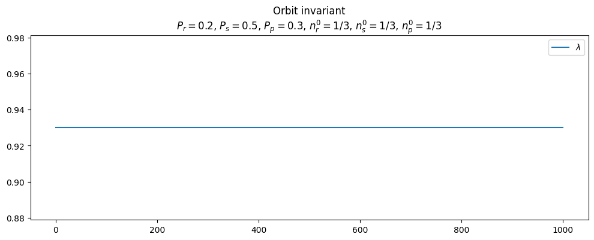

import numpy
import numpy as np
import pandas as pd
import matplotlib.pyplot as plt
import plotly.express as px
import plotly.graph_objects as go
from matplotlib import colormaps
from scipy.integrate import odeint
from graphviz import Source
from sympy import symbols, Matrix, Eq, solve
np.random.seed(0)Long range dispersal model
This notebook simulates the evolution of a three-species system with long-range dispersal.
Outline
- 1. Discrete-time model
- 2. Continuous-time model
- 3. Stochastic simulation of chemical reactions
- 4. Stochastic model checking
- 5. Petri net analysis
- 6. References
Importing the necessary libraries:
1. Discrete-time model
1.1. Finite population size
We consider a model world that has \(N\) available sites. The sites are occupied by three species, namely species \(r\) (rock), \(s\) (scissors) and \(p\) (paper), which occur in the proportions \(n_r\) , \(n_s\) and \(n_p\) (with \(n_r + n_s + n_p = 1\)). Two sites are chosen at each time-step. The occupant of the first replicates into the second with a given probability - individual of species \(r\) can invade a species \(s\) with probability \(P_r\), a species \(s\) invades a species \(p\) with probability \(P_s\), a species \(p\) invades a species \(r\) with probability \(P_p\) and all other invasion probabilities are zero.
Defining a function to simulate the evolution of the system for a world with \(N\) sites:
def simulate_finite_N(Pr, Ps, Pp, nr_init, ns_init, N=1000, epochs=100):
'''
Simulate the evolution of a population of three species over time
on a model world that has N available sites.
Parameters
----------
Pr : float
The probability that a species of type r invades a species of type s.
Ps : float
The probability that a species of type s invades a species of type p.
Pp : float
The probability that a species of type p invades a species of type r.
nr_init : float
The initial proportion of species r in the population.
ns_init : float
The initial proportion of species s in the population.
N : int
The number of sites.
epochs : int
The number of time units to simulate.
'''
def check_P(P):
if P < 0 or P > 1:
raise ValueError('Pr, Ps and Pp must be between 0 and 1')
check_P(Pr)
check_P(Ps)
check_P(Pp)
if nr_init + ns_init > 1:
raise ValueError('Initial species proportions must be less than 1')
if N < 1:
raise ValueError('Number of sites must be at least 1')
if epochs < 1:
raise ValueError('Number of steps must be at least 1')
sites = numpy.zeros(N)
nr = []
ns = []
np = []
r_id = 1
s_id = 2
p_id = 3
# Initialize the sites
for i in range(N):
sites[i] = numpy.random.choice([r_id, s_id, p_id], p=[nr_init, ns_init, 1-nr_init-ns_init])
nr.append(numpy.sum(sites == r_id) / N)
ns.append(numpy.sum(sites == s_id) / N)
np.append(numpy.sum(sites == p_id) / N)
for t in range(1, epochs):
for step in range(N):
# choose two random sites
i = numpy.random.randint(0, N)
j = numpy.random.randint(0, N)
if sites[i] == r_id and sites[j] == s_id: # rock beats scissors
if numpy.random.rand() < Pr:
sites[j] = r_id
elif sites[i] == s_id and sites[j] == p_id: # scissors beats paper
if numpy.random.rand() < Ps:
sites[j] = s_id
elif sites[i] == p_id and sites[j] == r_id: # paper beats rock
if numpy.random.rand() < Pp:
sites[j] = p_id
nr.append(numpy.sum(sites == r_id) / N)
ns.append(numpy.sum(sites == s_id) / N)
np.append(numpy.sum(sites == p_id) / N)
# if two species go extinct, stop the simulation
if sum([numpy.isclose(nr[-1], 0, 1e-4),
numpy.isclose(ns[-1], 0, 1e-4),
numpy.isclose(np[-1], 0, 1e-4)
]) >= 2:
break
return pd.DataFrame({'$n_r$': nr, '$n_s$': ns, '$n_p$': np})Defining functions to plot the evolution of the system:
def line_plot_species_evolution(df, title=None, show_markers=True):
'''
Plot the evolution of species proportions over time in a line plot.
Parameters
----------
df : pd.DataFrame
A DataFrame containing the species proportions over time.
title : str
The title of the plot.
'''
ax = df.plot(
figsize=(12, 4),
style='o-' if show_markers else '-', color=['tab:red', 'purple', 'gold'],
title=title,
xlabel='Time'
);
if show_markers:
for line in ax.get_lines():
line.set_markeredgecolor('black')
def phase_plot_species_evolution(df, title=None):
'''
Plot the evolution of species proportions over time in a phase plot.
Parameters
----------
df : pd.DataFrame
A DataFrame containing the species proportions over time.
title : str
The title of the plot.
'''
fig, axs = plt.subplots(1, 3, figsize=(15, 5), sharey=True, sharex=True)
cmap = colormaps['Blues']
colors = cmap(np.linspace(0, 1, (df[df.columns[0]].shape[0]-1)))
for i in range(3):
axs[i].plot(df[df.columns[i]][0:-1], df[df.columns[i]][1:], '-', color='k', zorder=1)
axs[i].scatter(df[df.columns[i]][0:-1], df[df.columns[i]][1:], c=colors, s=50, zorder=2, edgecolor='black')
axs[i].set_title(df.columns[i])
fig.suptitle(title);
fig.tight_layout()
def ternary_plot_species_evolution(df, title=None, show_markers=True):
'''
Plot the evolution of species proportions over time in a ternary plot.
Parameters
----------
df : pd.DataFrame
A DataFrame containing the species proportions over time.
title : str
The title of the plot.
'''
fig = px.scatter_ternary(
df,
a=df.columns[2],
b=df.columns[0],
c=df.columns[1],
color=df.index,
color_continuous_scale='blues',
size_max=10,
title=title
)
if show_markers:
fig.update_traces(mode='lines+markers', line=dict(color='black', width=1),
marker=dict(symbol='circle', line=dict(width=1, color='black')))
else:
fig.update_traces(mode='lines', line=dict(color='black', width=1))
fig.update_layout(coloraxis_colorbar=dict(title='Time'))
fig.show('png')Simulating the evolution of the system with \(P_r = 0.2\), \(P_s = 0.5\), \(P_p = 0.3\), \(N = 100\) initialized with population densities close to the fixed point (\(n_r=0.5\), \(n_s=0.3\), \(n_p=0.2\)):
fp_finite_N_df = simulate_finite_N(Pr=0.2, Ps=0.5, Pp=0.3, nr_init=0.5, ns_init=0.3, N=1000, epochs=1000)Plotting the evolution of the system:
line_plot_species_evolution(
fp_finite_N_df,
title='N=1000, $P_r=0.2$, $P_s=0.5$, $P_p=0.3$, $n_r^0$=0.5, $n_s^0$=0.3'
)
ternary_plot_species_evolution(
fp_finite_N_df,
title=r"$N=1000, P_r=0.2, P_s=0.5, P_p=0.3, n_r^0=0.5, n_s^0=0.3$"
)
In a finite world, the populations move from orbit to orbit, with two species (scissors and paper) eventually becoming extinct. The species that survives (rock) is the one that has the lowest invasion rate.
Performing simulations for a range of invasion probabilities chosen to sum to unity, initializing the population densities close to the fixed point and recording the surviving species:
# defining a grid of points for invasion probabilities
R, S = np.mgrid[0:1:20j, 0:1:20j]
R, S = R.ravel(), S.ravel()
P = 1 - R - S
I = np.array([R, S, P]).T
# keeping only invasion probabilities greater than 0.01
I = I[np.all(I > 0.01, axis=1)]
R = I[:, 0]
S = I[:, 1]
P = I[:, 2]
# total number of simulations to run
num_sim = len(I)
# number of sites
N = 1000
# maximum number of iterations
EPOCHS = 2000
# list to store the winner of each simulation
winners = []
# iterating over the invasion probabilities
for i, (Pr, Ps, Pp) in enumerate(I):
print(f"[{i+1}/{num_sim}] Running simulation for invasion probabilities: Pr={Pr:.2f}, Ps={Ps:.2f}, Pp={Pp:.2f}")
# simulating with the current invasion probabilities
results_df = simulate_finite_N(
Pr=Pr, Ps=Ps, Pp=Pp,
nr_init=Ps, ns_init=Pp,
N=N, epochs=EPOCHS
)
# storing the winner
if results_df.index.stop==EPOCHS: # no winner
winners.append('None')
elif np.isclose(results_df.iloc[-1]['$n_r$'], 1, 1e-4): # rock wins
winners.append('Rock')
elif np.isclose(results_df.iloc[-1]['$n_s$'], 1, 1e-4): # scissors wins
winners.append('Scissors')
else: # paper wins
winners.append('Paper')[1/153] Running simulation for invasion probabilities: Pr=0.05, Ps=0.05, Pp=0.89
[2/153] Running simulation for invasion probabilities: Pr=0.05, Ps=0.11, Pp=0.84
[3/153] Running simulation for invasion probabilities: Pr=0.05, Ps=0.16, Pp=0.79
[4/153] Running simulation for invasion probabilities: Pr=0.05, Ps=0.21, Pp=0.74
[5/153] Running simulation for invasion probabilities: Pr=0.05, Ps=0.26, Pp=0.68
[6/153] Running simulation for invasion probabilities: Pr=0.05, Ps=0.32, Pp=0.63
[7/153] Running simulation for invasion probabilities: Pr=0.05, Ps=0.37, Pp=0.58
[8/153] Running simulation for invasion probabilities: Pr=0.05, Ps=0.42, Pp=0.53
[9/153] Running simulation for invasion probabilities: Pr=0.05, Ps=0.47, Pp=0.47
[10/153] Running simulation for invasion probabilities: Pr=0.05, Ps=0.53, Pp=0.42
[11/153] Running simulation for invasion probabilities: Pr=0.05, Ps=0.58, Pp=0.37
[12/153] Running simulation for invasion probabilities: Pr=0.05, Ps=0.63, Pp=0.32
[13/153] Running simulation for invasion probabilities: Pr=0.05, Ps=0.68, Pp=0.26
[14/153] Running simulation for invasion probabilities: Pr=0.05, Ps=0.74, Pp=0.21
[15/153] Running simulation for invasion probabilities: Pr=0.05, Ps=0.79, Pp=0.16
[16/153] Running simulation for invasion probabilities: Pr=0.05, Ps=0.84, Pp=0.11
[17/153] Running simulation for invasion probabilities: Pr=0.05, Ps=0.89, Pp=0.05
[18/153] Running simulation for invasion probabilities: Pr=0.11, Ps=0.05, Pp=0.84
[19/153] Running simulation for invasion probabilities: Pr=0.11, Ps=0.11, Pp=0.79
[20/153] Running simulation for invasion probabilities: Pr=0.11, Ps=0.16, Pp=0.74
[21/153] Running simulation for invasion probabilities: Pr=0.11, Ps=0.21, Pp=0.68
[22/153] Running simulation for invasion probabilities: Pr=0.11, Ps=0.26, Pp=0.63
[23/153] Running simulation for invasion probabilities: Pr=0.11, Ps=0.32, Pp=0.58
[24/153] Running simulation for invasion probabilities: Pr=0.11, Ps=0.37, Pp=0.53
[25/153] Running simulation for invasion probabilities: Pr=0.11, Ps=0.42, Pp=0.47
[26/153] Running simulation for invasion probabilities: Pr=0.11, Ps=0.47, Pp=0.42
[27/153] Running simulation for invasion probabilities: Pr=0.11, Ps=0.53, Pp=0.37
[28/153] Running simulation for invasion probabilities: Pr=0.11, Ps=0.58, Pp=0.32
[29/153] Running simulation for invasion probabilities: Pr=0.11, Ps=0.63, Pp=0.26
[30/153] Running simulation for invasion probabilities: Pr=0.11, Ps=0.68, Pp=0.21
[31/153] Running simulation for invasion probabilities: Pr=0.11, Ps=0.74, Pp=0.16
[32/153] Running simulation for invasion probabilities: Pr=0.11, Ps=0.79, Pp=0.11
[33/153] Running simulation for invasion probabilities: Pr=0.11, Ps=0.84, Pp=0.05
[34/153] Running simulation for invasion probabilities: Pr=0.16, Ps=0.05, Pp=0.79
[35/153] Running simulation for invasion probabilities: Pr=0.16, Ps=0.11, Pp=0.74
[36/153] Running simulation for invasion probabilities: Pr=0.16, Ps=0.16, Pp=0.68
[37/153] Running simulation for invasion probabilities: Pr=0.16, Ps=0.21, Pp=0.63
[38/153] Running simulation for invasion probabilities: Pr=0.16, Ps=0.26, Pp=0.58
[39/153] Running simulation for invasion probabilities: Pr=0.16, Ps=0.32, Pp=0.53
[40/153] Running simulation for invasion probabilities: Pr=0.16, Ps=0.37, Pp=0.47
[41/153] Running simulation for invasion probabilities: Pr=0.16, Ps=0.42, Pp=0.42
[42/153] Running simulation for invasion probabilities: Pr=0.16, Ps=0.47, Pp=0.37
[43/153] Running simulation for invasion probabilities: Pr=0.16, Ps=0.53, Pp=0.32
[44/153] Running simulation for invasion probabilities: Pr=0.16, Ps=0.58, Pp=0.26
[45/153] Running simulation for invasion probabilities: Pr=0.16, Ps=0.63, Pp=0.21
[46/153] Running simulation for invasion probabilities: Pr=0.16, Ps=0.68, Pp=0.16
[47/153] Running simulation for invasion probabilities: Pr=0.16, Ps=0.74, Pp=0.11
[48/153] Running simulation for invasion probabilities: Pr=0.16, Ps=0.79, Pp=0.05
[49/153] Running simulation for invasion probabilities: Pr=0.21, Ps=0.05, Pp=0.74
[50/153] Running simulation for invasion probabilities: Pr=0.21, Ps=0.11, Pp=0.68
[51/153] Running simulation for invasion probabilities: Pr=0.21, Ps=0.16, Pp=0.63
[52/153] Running simulation for invasion probabilities: Pr=0.21, Ps=0.21, Pp=0.58
[53/153] Running simulation for invasion probabilities: Pr=0.21, Ps=0.26, Pp=0.53
[54/153] Running simulation for invasion probabilities: Pr=0.21, Ps=0.32, Pp=0.47
[55/153] Running simulation for invasion probabilities: Pr=0.21, Ps=0.37, Pp=0.42
[56/153] Running simulation for invasion probabilities: Pr=0.21, Ps=0.42, Pp=0.37
[57/153] Running simulation for invasion probabilities: Pr=0.21, Ps=0.47, Pp=0.32
[58/153] Running simulation for invasion probabilities: Pr=0.21, Ps=0.53, Pp=0.26
[59/153] Running simulation for invasion probabilities: Pr=0.21, Ps=0.58, Pp=0.21
[60/153] Running simulation for invasion probabilities: Pr=0.21, Ps=0.63, Pp=0.16
[61/153] Running simulation for invasion probabilities: Pr=0.21, Ps=0.68, Pp=0.11
[62/153] Running simulation for invasion probabilities: Pr=0.21, Ps=0.74, Pp=0.05
[63/153] Running simulation for invasion probabilities: Pr=0.26, Ps=0.05, Pp=0.68
[64/153] Running simulation for invasion probabilities: Pr=0.26, Ps=0.11, Pp=0.63
[65/153] Running simulation for invasion probabilities: Pr=0.26, Ps=0.16, Pp=0.58
[66/153] Running simulation for invasion probabilities: Pr=0.26, Ps=0.21, Pp=0.53
[67/153] Running simulation for invasion probabilities: Pr=0.26, Ps=0.26, Pp=0.47
[68/153] Running simulation for invasion probabilities: Pr=0.26, Ps=0.32, Pp=0.42
[69/153] Running simulation for invasion probabilities: Pr=0.26, Ps=0.37, Pp=0.37
[70/153] Running simulation for invasion probabilities: Pr=0.26, Ps=0.42, Pp=0.32
[71/153] Running simulation for invasion probabilities: Pr=0.26, Ps=0.47, Pp=0.26
[72/153] Running simulation for invasion probabilities: Pr=0.26, Ps=0.53, Pp=0.21
[73/153] Running simulation for invasion probabilities: Pr=0.26, Ps=0.58, Pp=0.16
[74/153] Running simulation for invasion probabilities: Pr=0.26, Ps=0.63, Pp=0.11
[75/153] Running simulation for invasion probabilities: Pr=0.26, Ps=0.68, Pp=0.05
[76/153] Running simulation for invasion probabilities: Pr=0.32, Ps=0.05, Pp=0.63
[77/153] Running simulation for invasion probabilities: Pr=0.32, Ps=0.11, Pp=0.58
[78/153] Running simulation for invasion probabilities: Pr=0.32, Ps=0.16, Pp=0.53
[79/153] Running simulation for invasion probabilities: Pr=0.32, Ps=0.21, Pp=0.47
[80/153] Running simulation for invasion probabilities: Pr=0.32, Ps=0.26, Pp=0.42
[81/153] Running simulation for invasion probabilities: Pr=0.32, Ps=0.32, Pp=0.37
[82/153] Running simulation for invasion probabilities: Pr=0.32, Ps=0.37, Pp=0.32
[83/153] Running simulation for invasion probabilities: Pr=0.32, Ps=0.42, Pp=0.26
[84/153] Running simulation for invasion probabilities: Pr=0.32, Ps=0.47, Pp=0.21
[85/153] Running simulation for invasion probabilities: Pr=0.32, Ps=0.53, Pp=0.16
[86/153] Running simulation for invasion probabilities: Pr=0.32, Ps=0.58, Pp=0.11
[87/153] Running simulation for invasion probabilities: Pr=0.32, Ps=0.63, Pp=0.05
[88/153] Running simulation for invasion probabilities: Pr=0.37, Ps=0.05, Pp=0.58
[89/153] Running simulation for invasion probabilities: Pr=0.37, Ps=0.11, Pp=0.53
[90/153] Running simulation for invasion probabilities: Pr=0.37, Ps=0.16, Pp=0.47
[91/153] Running simulation for invasion probabilities: Pr=0.37, Ps=0.21, Pp=0.42
[92/153] Running simulation for invasion probabilities: Pr=0.37, Ps=0.26, Pp=0.37
[93/153] Running simulation for invasion probabilities: Pr=0.37, Ps=0.32, Pp=0.32
[94/153] Running simulation for invasion probabilities: Pr=0.37, Ps=0.37, Pp=0.26
[95/153] Running simulation for invasion probabilities: Pr=0.37, Ps=0.42, Pp=0.21
[96/153] Running simulation for invasion probabilities: Pr=0.37, Ps=0.47, Pp=0.16
[97/153] Running simulation for invasion probabilities: Pr=0.37, Ps=0.53, Pp=0.11
[98/153] Running simulation for invasion probabilities: Pr=0.37, Ps=0.58, Pp=0.05
[99/153] Running simulation for invasion probabilities: Pr=0.42, Ps=0.05, Pp=0.53
[100/153] Running simulation for invasion probabilities: Pr=0.42, Ps=0.11, Pp=0.47
[101/153] Running simulation for invasion probabilities: Pr=0.42, Ps=0.16, Pp=0.42
[102/153] Running simulation for invasion probabilities: Pr=0.42, Ps=0.21, Pp=0.37
[103/153] Running simulation for invasion probabilities: Pr=0.42, Ps=0.26, Pp=0.32
[104/153] Running simulation for invasion probabilities: Pr=0.42, Ps=0.32, Pp=0.26
[105/153] Running simulation for invasion probabilities: Pr=0.42, Ps=0.37, Pp=0.21
[106/153] Running simulation for invasion probabilities: Pr=0.42, Ps=0.42, Pp=0.16
[107/153] Running simulation for invasion probabilities: Pr=0.42, Ps=0.47, Pp=0.11
[108/153] Running simulation for invasion probabilities: Pr=0.42, Ps=0.53, Pp=0.05
[109/153] Running simulation for invasion probabilities: Pr=0.47, Ps=0.05, Pp=0.47
[110/153] Running simulation for invasion probabilities: Pr=0.47, Ps=0.11, Pp=0.42
[111/153] Running simulation for invasion probabilities: Pr=0.47, Ps=0.16, Pp=0.37
[112/153] Running simulation for invasion probabilities: Pr=0.47, Ps=0.21, Pp=0.32
[113/153] Running simulation for invasion probabilities: Pr=0.47, Ps=0.26, Pp=0.26
[114/153] Running simulation for invasion probabilities: Pr=0.47, Ps=0.32, Pp=0.21
[115/153] Running simulation for invasion probabilities: Pr=0.47, Ps=0.37, Pp=0.16
[116/153] Running simulation for invasion probabilities: Pr=0.47, Ps=0.42, Pp=0.11
[117/153] Running simulation for invasion probabilities: Pr=0.47, Ps=0.47, Pp=0.05
[118/153] Running simulation for invasion probabilities: Pr=0.53, Ps=0.05, Pp=0.42
[119/153] Running simulation for invasion probabilities: Pr=0.53, Ps=0.11, Pp=0.37
[120/153] Running simulation for invasion probabilities: Pr=0.53, Ps=0.16, Pp=0.32
[121/153] Running simulation for invasion probabilities: Pr=0.53, Ps=0.21, Pp=0.26
[122/153] Running simulation for invasion probabilities: Pr=0.53, Ps=0.26, Pp=0.21
[123/153] Running simulation for invasion probabilities: Pr=0.53, Ps=0.32, Pp=0.16
[124/153] Running simulation for invasion probabilities: Pr=0.53, Ps=0.37, Pp=0.11
[125/153] Running simulation for invasion probabilities: Pr=0.53, Ps=0.42, Pp=0.05
[126/153] Running simulation for invasion probabilities: Pr=0.58, Ps=0.05, Pp=0.37
[127/153] Running simulation for invasion probabilities: Pr=0.58, Ps=0.11, Pp=0.32
[128/153] Running simulation for invasion probabilities: Pr=0.58, Ps=0.16, Pp=0.26
[129/153] Running simulation for invasion probabilities: Pr=0.58, Ps=0.21, Pp=0.21
[130/153] Running simulation for invasion probabilities: Pr=0.58, Ps=0.26, Pp=0.16
[131/153] Running simulation for invasion probabilities: Pr=0.58, Ps=0.32, Pp=0.11
[132/153] Running simulation for invasion probabilities: Pr=0.58, Ps=0.37, Pp=0.05
[133/153] Running simulation for invasion probabilities: Pr=0.63, Ps=0.05, Pp=0.32
[134/153] Running simulation for invasion probabilities: Pr=0.63, Ps=0.11, Pp=0.26
[135/153] Running simulation for invasion probabilities: Pr=0.63, Ps=0.16, Pp=0.21
[136/153] Running simulation for invasion probabilities: Pr=0.63, Ps=0.21, Pp=0.16
[137/153] Running simulation for invasion probabilities: Pr=0.63, Ps=0.26, Pp=0.11
[138/153] Running simulation for invasion probabilities: Pr=0.63, Ps=0.32, Pp=0.05
[139/153] Running simulation for invasion probabilities: Pr=0.68, Ps=0.05, Pp=0.26
[140/153] Running simulation for invasion probabilities: Pr=0.68, Ps=0.11, Pp=0.21
[141/153] Running simulation for invasion probabilities: Pr=0.68, Ps=0.16, Pp=0.16
[142/153] Running simulation for invasion probabilities: Pr=0.68, Ps=0.21, Pp=0.11
[143/153] Running simulation for invasion probabilities: Pr=0.68, Ps=0.26, Pp=0.05
[144/153] Running simulation for invasion probabilities: Pr=0.74, Ps=0.05, Pp=0.21
[145/153] Running simulation for invasion probabilities: Pr=0.74, Ps=0.11, Pp=0.16
[146/153] Running simulation for invasion probabilities: Pr=0.74, Ps=0.16, Pp=0.11
[147/153] Running simulation for invasion probabilities: Pr=0.74, Ps=0.21, Pp=0.05
[148/153] Running simulation for invasion probabilities: Pr=0.79, Ps=0.05, Pp=0.16
[149/153] Running simulation for invasion probabilities: Pr=0.79, Ps=0.11, Pp=0.11
[150/153] Running simulation for invasion probabilities: Pr=0.79, Ps=0.16, Pp=0.05
[151/153] Running simulation for invasion probabilities: Pr=0.84, Ps=0.05, Pp=0.11
[152/153] Running simulation for invasion probabilities: Pr=0.84, Ps=0.11, Pp=0.05
[153/153] Running simulation for invasion probabilities: Pr=0.89, Ps=0.05, Pp=0.05Plotting the surviving species on a ternary plot:
fig = px.scatter_ternary(
pd.DataFrame(I, columns=['$P_r$', '$P_s$', '$P_p$']),
a="$P_p$",
b="$P_r$",
c="$P_s$",
size_max=10,
title=f"Surviving species after {EPOCHS} epochs<br>N={N}, population densities initialized with their value at the fixed point",
color = winners,
color_discrete_map={'None': 'black', 'Rock': 'red', 'Scissors': 'purple', 'Paper': 'gold'}
)
fig.update_layout(legend_title_text='Winner')
fig.show('png')
The weakest competitor is most likely to survive.
1.2. Large population size
In the limit of large \(N\), the rate of change of species population density is given by the mean-field equations:
\[\begin{cases} \frac{\partial n_r}{\partial t}=n_r\cdot (n_s\cdot P_r - n_p \cdot P_p)\\ \frac{\partial n_s}{\partial t}=n_s\cdot (n_p\cdot P_s - n_r \cdot P_r)\\ \frac{\partial n_p}{\partial t}=n_p\cdot (n_r\cdot P_p - n_s \cdot P_s)\\ \end{cases}\]where the system dynamic is approximated considering the average effect of interactions rather than tracking every specific interaction (hence the term mean-field).
For example, in the first equation, \(n_s\cdot P_r\) represents the rate at which the rock species increases due to its successful invasion of the scissors species, while \(n_p\cdot P_p\) represents the rate at which the rock species decreases due to the successful invasion of the paper species. The difference between these terms is then multiplied by the population density of the rock species to ensure that the rate of change is properly scaled according to the availability of species r. Similar considerations apply to the other equations.
Note that in these equations a unit of time \(t\) is \(N\) individual time-steps, which we refer to as an epoch.
To transform continuous-time differential equation into a discrete-time recurrence relation that describes the evolution of the population over time, we observe that the derivative \(\frac{\partial n_r}{\partial t}\) can be approximated by the difference between the population densities at consecutive time steps
\[\frac{\partial n_r}{\partial t}=\frac{n_r[t+1]-n_r[t]}{\Delta_t}\]
and solving for \(n_r[t+1]\) we obtain
\[n_r[t+\Delta_t]=n_r[t] + \Delta_t \cdot n_r[t](n_s[t]P_r - n_p[t] P_p)\]
Applying the same reasoning to the other equations, we obtain the following system of recurrence equations:
\[\begin{cases} n_r[t+\Delta_t]=n_r[t] + \Delta_t \cdot n_r[t](n_s[t]P_r - n_p[t] P_p)\\ n_s[t+\Delta_t]=n_s[t] + \Delta_t \cdot n_s[t](n_p[t]P_s - n_r[t] P_r)\\ n_p[t+\Delta_t]=n_p[t] + \Delta_t \cdot n_p[t](n_r[t]P_p - n_s[t] P_s)\\ \end{cases}\]Defining a function to simulate the evolution of the system of recurrent equations under the large \(N\) assumption:
def simulate_large_N(Pr, Ps, Pp, nr_init, ns_init, delta_t=0.001, epochs=1000):
'''
Simulate the evolution of a population of three species over time using
the recurrence relations under the large N assumption.
Parameters
----------
Pr : float
The probability that a species of type r invades a species of type s.
Ps : float
The probability that a species of type s invades a species of type p.
Pp : float
The probability that a species of type p invades a species of type r.
nr_init : float
The initial proportion of species r in the population.
ns_init : float
The initial proportion of species s in the population.
delta_t : float
The time step size.
epochs : int
The number of time units to simulate.
'''
def check_P(P):
if P < 0 or P > 1:
raise ValueError('Pr, Ps and Pp must be between 0 and 1')
check_P(Pr)
check_P(Ps)
check_P(Pp)
if nr_init + ns_init > 1:
raise ValueError('Initial species proportions must be less than 1')
if epochs < 1:
raise ValueError('Number of steps must be at least 1')
nr = []
ns = []
np = []
nr.append(nr_init)
ns.append(ns_init)
np.append(1 - nr_init - ns_init)
for _ in range(0, epochs-1):
nr.append(nr[-1] + nr[-1]*delta_t*(ns[-1]*Pr - np[-1]*Pp))
ns.append(ns[-1] + ns[-1]*delta_t*(np[-1]*Ps - nr[-2]*Pr)) # use nr from the previous time step
np.append(1 - nr[-1] - ns[-1])
# if two species go extinct, stop the simulation
if sum([numpy.isclose(nr[-1], 0, 1e-4),
numpy.isclose(ns[-1], 0, 1e-4),
numpy.isclose(np[-1], 0, 1e-4)]) >= 2:
break
return pd.DataFrame({'$n_r$': nr, '$n_s$': ns, '$n_p$': np})Trivial fixed points of the system are (\(n_r=0, n_s=0, n_p=1\)), (\(n_r=0, n_s=1, n_p=0\)) and (\(n_r=1, n_s=0, n_p=0\)).
The non-trivial fixed point is obtained by setting the rates of change to zero:
\[\begin{cases} \frac{\partial n_r}{\partial t}=n_r\cdot (n_s\cdot P_r - n_p \cdot P_p)=0 \implies n_p = \frac{n_s\cdot P_r}{P_p}&\text{(1)}\\ \frac{\partial n_s}{\partial t}=n_s\cdot (n_p\cdot P_s - n_r \cdot P_r)=0 \implies n_r = \frac{n_p\cdot P_s}{P_r}&\text{(2)}\\ n_r+n_s+n_p=1 \implies n_s = 1-n_p-n_r&\text{(3)}\\ \end{cases}\]\[\implies\]
\[\begin{cases} n_r = \frac{n_s \cdot \cancel{P_r}\cdot P_s}{P_p\cdot \cancel{P_r}}&\text{(4), substituting (1) into (2)}\\ n_s = 1-\frac{n_s\cdot P_r}{P_p}-nr&\text{(5), substituting (1) into (3)}\\ \end{cases}\]\[\implies\]
\[\begin{cases} n_s=1-\frac{n_s\cdot P_r}{P_p}-\frac{n_s\cdot P_s}{P_p}\implies n_s=\frac{P_p}{P_p+P_r+P_s}&\text{(6), substituting (4) into (5)}\\ n_p=\frac{n_s\cdot P_r}{P_p}=\frac{\cancel{P_p}\cdot P_r}{\cancel{P_p}\cdot (P_p+P_r+P_s)}=\frac{P_r}{P_p+P_r+P_s}&\text{(7), substituting (6) into (1)}\\ n_r=\frac{n_p\cdot P_s}{P_r}=\frac{\cancel{P_r}\cdot P_s}{\cancel{P_r}\cdot (P_p+P_r+P_s)}=\frac{P_s}{P_p+P_r+P_s}&\text{(8), substituting (7) into (2)}\\ \end{cases}\]In the following, we will refer to the population density at the fixed point as \(R\), \(S\) and \(P\) for species \(r\), \(s\) and \(p\) respectively. The population densities at the fixed point are controlled by the invasion rate of the species they invade (the fixed point population of species \(r\) depends on the invasion rate of species \(s\), the fixed point population of species \(s\) depends on the invasion rate of species \(p\) and the fixed point population of species \(p\) depends on the invasion rate of species \(r\)). As a consequence, the most aggressive species never has the highest fixed-point population. Moreover, if the invasion probabilities of two species are held steady, then a decrease in the competitive ability of the third leads to an increase in its fixed-point population. For example, if the invasion rate of species \(p\) decreases, then the population at the fixed point of species \(s\) decreases and since there are less \(s\) individuals invading species \(r\), the population of \(r\) increases.
Simulating the evolution of the system of recurrent equations under the large N assumption with \(P_r = 0.2\), \(P_s = 0.5\), \(P_p = 0.3\) initialized with population densities close to the fixed point (\(n_r=0.5\), \(n_s=0.3\), \(n_p=0.2\)):
fp_large_N_df = simulate_large_N(Pr=0.2, Ps=0.5, Pp=0.3, nr_init=0.5, ns_init=0.3, epochs=100)Plotting the evolution of the system:
line_plot_species_evolution(
fp_large_N_df,
title='Large N assumption, $P_r=0.2$, $P_s=0.5$, $P_p=0.3$, $n_r^0$=0.5, $n_s^0$=0.3'
)
Initializing the population densities equal to the fixed point (\(n_r=1/3\), \(n_s=1/3\), \(n_p=1/3\)), the system remains at the fixed point.
Simulating the evolution of the system under the large N assumption with \(P_r = 0.2\), \(P_s = 0.5\), \(P_p = 0.3\), initialized with equal population densities (\(n_r=1/3\), \(n_s=1/3\), \(n_p=1/3\)) and using \(\Delta_t=1\):
eq_large_N_df = simulate_large_N(Pr=0.2, Ps=0.5, Pp=0.3, nr_init=1/3, ns_init=1/3, delta_t=1, epochs=1000)Plotting the evolution of the system:
line_plot_species_evolution(
eq_large_N_df,
title='Large N assumption, $P_r=0.2$, $P_s=0.5$, $P_p=0.3$, $n_r^0$=1/3, $n_s^0$=1/3'
)
phase_plot_species_evolution(
eq_large_N_df,
title='Phase portait\nLarge N assumption, $P_r=0.2$, $P_s=0.5$, $P_p=0.3$, $n_r^0$=1/3, $n_s^0$=1/3'
)
ternary_plot_species_evolution(
eq_large_N_df,
title=r"$\text{Large N assumption, }P_r=0.2, P_s=0.5, P_p=0.3, n_r^0=1/3, n_s^0=1/3$"
)
Simulating the evolution of the system with \(\Delta_t=0.01\) to increase accuracy:
eq_large_N_df = simulate_large_N(Pr=0.2, Ps=0.5, Pp=0.3, nr_init=1/3, ns_init=1/3, delta_t=0.01, epochs=100000)Plotting the evolution of the system:
line_plot_species_evolution(
eq_large_N_df,
title='Large N assumption, $P_r=0.2$, $P_s=0.5$, $P_p=0.3$, $n_r^0$=1/3, $n_s^0$=1/3',
show_markers=False
)
ternary_plot_species_evolution(
eq_large_N_df,
title=r"$\text{Large N assumption, }P_r=0.2, P_s=0.5, P_p=0.3, n_r^0=1/3, n_s^0=1/3$",
show_markers=False
)
In the limit that the total number of sites is large the populations move along a periodic orbit around the fixed point.
2. Continuous-time model
To enhance accuracy, we simulate the systems evolution by solving the differential equations that define it.
The odeint method from scipy.integrate solves a system of ordinary differential equations using lsoda from the FORTRAN library odepack. This library uses the Adams/BDF method with automatic stiffness detection and switching.
def ODE_solver(t, P, x0):
'''
Solve the initial value problem for the ODE system.
'''
def RSP(x, t, P):
nr = x[0]
Pr = P[0]
ns = x[1]
Ps = P[1]
np = 1 - nr - ns
Pp = P[2]
d_nr_dt = nr*(ns*Pr - np*Pp)
d_ns_dt = ns*(np*Ps - nr*Pr)
return [d_nr_dt, d_ns_dt]
y = odeint(RSP, x0, t, args=(P,))
results_df = pd.DataFrame(y, columns=['$n_r$', '$n_s$'])
results_df['$n_p$'] = 1 - results_df['$n_r$'] - results_df['$n_s$']
return results_df
def simulate_continuous(t, Pr, Ps, Pp, nr_init, ns_init):
'''
Simulate the evolution of a population of three species over time in the
continuous setting, solving the initial value problem for the ODE system.
'''
if nr_init + ns_init > 1:
raise ValueError('Initial species proportions must be less than 1')
def check_P(P):
if P < 0 or P > 1:
raise ValueError('P_r, P_s and P_p must be between 0 and 1')
check_P(Pr)
check_P(Ps)
check_P(Pp)
P = [Pr, Ps, Pp]
x0 = [nr_init, ns_init]
s = ODE_solver(t, P, x0)
return sSimulating the evolution of the system in the continuous setting with \(P_r = 0.2\), \(P_s = 0.5\), \(P_p = 0.3\) initialized with population densities close to the fixed point (\(n_r=0.5\), \(n_s=0.3\), \(n_p=0.2\)):
fp_continuous_df = simulate_continuous(t=np.linspace(0,100,101), Pr=0.2, Ps=0.5, Pp=0.3, nr_init=0.5, ns_init=0.3)Plotting the evolution of the system:
line_plot_species_evolution(
fp_continuous_df,
title='$P_r=0.2$, $P_s=0.5$, $P_p=0.3$, $n_r^0$=0.5, $n_s^0$=0.3'
)
As in the discrete time setting, initializing the population densities equal to the fixed point (\(n_r=1/3\), \(n_s=1/3\), \(n_p=1/3\)), the system remains at the fixed point.
Simulating the evolution of the system in the continuous setting with \(P_r = 0.2\), \(P_s = 0.5\), \(P_p = 0.3\), initialized with equal population densities (\(n_r=1/3\), \(n_s=1/3\), \(n_p=1/3\)):
eq_continuous_df = simulate_continuous(t=np.linspace(0,1000,1001), Pr=0.2, Ps=0.5, Pp=0.3, nr_init=1/3, ns_init=1/3)Plottting the evolution of the system:
line_plot_species_evolution(
eq_continuous_df,
title='$P_r=0.2$, $P_s=0.5$, $P_p=0.3$, $n_r^0$=1/3, $n_s^0$=1/3'
)
ternary_plot_species_evolution(
eq_continuous_df,
title=r"$P_r=0.2, P_s=0.5, P_p=0.3, n_r^0=1/3, n_s^0=1/3$"
)
Again, the populations move along a periodic orbit around the fixed point.
Performing simulations for different initial population densities and plotting the orbits on a ternary plot:
fig = go.Figure()
# iterating over initial proportions
for i, init in enumerate([0.1, 0.2, 0.3, 0.4]):
# simulate the system
df = simulate_continuous(t=np.linspace(0,100,101), Pr=0.2, Ps=0.5, Pp=0.3, nr_init=init, ns_init=init)
# plot the trajectory
fig.add_trace(go.Scatterternary(
mode='lines',
a=df['$n_p$'],
b=df['$n_r$'],
c=df['$n_s$'],
name=f'$n_r^0={init}, n_s^0={init}$',
line=dict(color=px.colors.qualitative.Dark2[i], width=1)
))
fig.update_layout(
ternary=dict(
aaxis_title='$n_p$',
baxis_title='$n_r$',
caxis_title='$n_s$'
),
title=r"$\text{Periodic orbits around the non-trivial fixed point}\\P_r=0.2, P_s=0.5, P_p=0.3$",
legend=dict(
title='Initial conditions'
)
)
fig.show('png')
The quantity \(\lambda=(\frac{n_r}{R})^R(\frac{n_s}{S})^S(\frac{n_p}{P})^P\) is invariant along each orbit, with \(\lambda=1\) when the populations are at the fixed point and \(\lambda=0\) when one or more of the species become extinct.
Defining a function to calculate the invariant:
def compute_lambda(df, Pr, Ps, Pp):
df['lambda'] = (df['$n_r$']/0.5)**Ps*(df['$n_s$']/Pp)**Pp*(df['$n_p$']/Pr)**Pr
return dfComputing and plotting the orbit invariant:
eq_continuous_df = compute_lambda(eq_continuous_df, Pr=0.2, Ps=0.5, Pp=0.3)
eq_continuous_df['lambda'].apply(lambda x: round(x, 2)).plot(
figsize=(12,4),
y='lambda',
style='-', label='$\lambda$',
title='Orbit invariant\n$P_r=0.2$, $P_s=0.5$, $P_p=0.3$, $n_r^0=1/3$, $n_s^0=1/3$'
)
plt.legend()<matplotlib.legend.Legend at 0x2a1434750>
results_df = simulate_continuous(t=np.linspace(0,500,501), Pr=0.1, Ps=0.1, Pp=0.8, nr_init=1/3, ns_init=1/3)line_plot_species_evolution(
results_df,
title='$P_r=0.1$, $P_s=0.1$, $P_p=0.8$, $n_r^0$=1/3, $n_s^0$=1/3'
)
3. Stochastic simulation of chemical reactions
While ODEs are deterministic and do not account for fluctuations in population densities, stochastic simulation methods offer greater accuracy, particularly when analyzing reaction systems with small quantities of molecules.
To perform stochastic simulations, we need to translate the ODE system
\[\begin{cases} \frac{\partial n_r}{\partial t}=\textcolor{violet}{n_r\cdot n_s\cdot P_r} - \textcolor{gold}{n_r \cdot n_p \cdot P_p}\\ \frac{\partial n_s}{\partial t}=\textcolor{cyan}{n_s\cdot n_p\cdot P_s} - \textcolor{orange}{n_s\cdot n_r \cdot P_r}\\ \frac{\partial n_p}{\partial t}=\textcolor{palegreen}{n_p\cdot n_r\cdot P_p} - \textcolor{red}{n_p\cdot n_s \cdot P_s}\\ \end{cases}\]into a system of chemical reactions, by constructing one reaction for each term of the equations as follows
\[\begin{cases} \textcolor{violet}{R + S \xrightarrow{P_r} S + 2R}\\ \textcolor{gold}{R + P \xrightarrow{P_p} P}\\ \textcolor{cyan}{S + P \xrightarrow{P_s} P + 2S}\\ \textcolor{orange}{S + R \xrightarrow{P_r} R}\\ \textcolor{palegreen}{P + R \xrightarrow{P_p} R + 2P}\\ \textcolor{red}{P + S \xrightarrow{P_s} S}\\ \end{cases}\]where we use the capital letters \(R, S, P\) to denote the species rock, scissors and paper respectively.
We can simplify the system by noting, for example, that the terms \(\textcolor{violet}{n_r\cdot n_s\cdot P_r}\) and \(\textcolor{orange}{n_s\cdot n_r \cdot P_r}\) can be represented by the same reaction. Hence we can combine them into a single reaction and do the same for the other similar terms, obtaining the following system
\[\begin{cases} R + S \xrightarrow{P_r} 2R\\ S + P \xrightarrow{P_s} 2S\\ P + R \xrightarrow{P_p} 2P\\ \end{cases}\]The simplified system clearly represents the interactions between the species: rocks beat scissors with probability \(P_r\), scissors beat paper with probability \(P_s\) and paper beats rock with probability \(P_p\).
We will use StochPy, a Python package for stochastic simulation of chemical reactions:
import stochpy
#######################################################################
# #
# Welcome to the interactive StochPy environment #
# #
#######################################################################
# StochPy: Stochastic modeling in Python #
# http://stochpy.sourceforge.net #
# Copyright(C) T.R Maarleveld, B.G. Olivier, F.J Bruggeman 2010-2015 #
# DOI: 10.1371/journal.pone.0079345 #
# Email: tmd200@users.sourceforge.net #
# VU University, Amsterdam, Netherlands #
# Centrum Wiskunde Informatica, Amsterdam, Netherlands #
# StochPy is distributed under the BSD licence. #
#######################################################################
Version 2.4.0
Output Directory: /Users/irenetesta/Stochpy
Model Directory: /Users/irenetesta/Stochpy/pscmodelsStochPy uses the PySCeS MDL, an ASCII text based input file to describe a system in terms of its stoichiometry, kinetics, compartments and parameters. We defined the system using such format and saved it in the file ../long_range_models/RSP_model_reduced.psc:
!cat ../long_range_models/RSP_model_reduced.psc# Rock Scissors Paper model
# R + S --> 2R, Pr
# P + R --> 2P, Pp
# S + P --> 2S, Ps
R1:
R + S > R + R
R*S*Pr
R2:
S + P > S + S
S*P*Ps
R3:
P + R > P + P
P*R*Pp
# Parameters
Pr = 0.2
Ps = 0.5
Pp = 0.3
# Init Values
R = 33
S = 33
P = 33Loading the model:
smod = stochpy.SSA(IsQuiet=False)
smod.Model(model_file="RSP_model_reduced.psc",dir="../long_range_models/")
smod.ShowSpecies()Info: Direct method is selected to perform stochastic simulations.
Parsing file: /Users/irenetesta/Stochpy/pscmodels/ImmigrationDeath.psc
Info: No reagents have been fixed
Parsing file: ../long_range_models/RSP_model_reduced.psc
Info: No reagents have been fixed
['R', 'S', 'P']Setting initial conditions (close to the fixed point) and parameters, using a high number of copies for each species to approximate the deterministic behavior of the system:
smod.ChangeParameter("Pr", 0.2)
smod.ChangeParameter("Ps", 0.5)
smod.ChangeParameter("Pp", 0.3)
smod.ChangeInitialSpeciesCopyNumber("R", 50000)
smod.ChangeInitialSpeciesCopyNumber("S", 30000)
smod.ChangeInitialSpeciesCopyNumber("P", 20000)The method to perform a stochastic simulation is DoStochSim:
help(smod.DoStochSim)Help on method DoStochSim in module stochpy.modules.StochSim:
DoStochSim(end=False, mode=False, method=False, trajectories=False, epsilon=0.03, IsTrackPropensities=False, rate_selection=None, species_selection=None, IsOnlyLastTimepoint=False, critical_reactions=[], reaction_orders=False, species_HORs=False, species_max_influence=False, quiet=False) method of stochpy.modules.StochSim.SSA instance
Run a stochastic simulation for until `end` is reached. This can be either time steps or end time (which could be a *HUGE* number of steps).
Input:
- *end* [default=1000] (float) simulation end (steps or time)
- *mode* [default='steps'] (string) simulation mode, can be one of: ['steps','time']
- *method* [default='Direct'] (string) stochastic algorithm ['Direct', 'FRM', 'NRM', 'TauLeap']
- *trajectories* [default = 1] (integer)
- *epsilon* [default = 0.03] (float) parameter for the tau-leap method
- *IsTrackPropensities* [default = False]
- *rate_selection* [default = None] (list) of names of rates to store. This saves memory space and prevents Memory Errors when propensities propensities are tracked
- *species_selection* [default = None] (list) of names of species to store. This saves memory space and prevents Memory Errors (occurring at ~15 species).
- *IsOnlyLastTimepoint* [default = False] (boolean)
- *critical_reactions* [default = [] ] (list) ONLY for the tau-leaping method where the user can pre-define reactions that are "critical". Critical reactions can fire only once per time step.
- *reaction_orders* [default = [] (list) ONLY for the tau-leaping method
- *species_HORs* [default = [] (list) ONLY for the tau-leaping method
- *species_max_influence* [default = []] (list) ONLY for the tau-leaping method
- *quiet* [default = False] suppress print statements
In the following, we will only use the Direct method as its variants are designed to reduce computational costs, which is not a concern for the simulations we will perform.
Performing a stochastic simulation using default parameters:
smod.DoStochSim()
smod.PlotSpeciesTimeSeries(colors=["tab:red", "purple", "gold"], xlabel="Steps")
stochpy.plt.title("$P_r=0.2$, $P_s=0.5$, $P_p=0.3$, $R=50000$, $S=30000$, $P=20000$");Info: 1 trajectory is generated
simulation done!
Info: Number of time steps 1000 End time 1.0951329075756742e-06
Info: Simulation time 0.01658/Users/irenetesta/anaconda3/envs/stochpy/lib/python3.11/site-packages/stochpy/modules/Analysis.py:479: UserWarning:
linestyle is redundantly defined by the 'linestyle' keyword argument and the fmt string "" (-> linestyle='-'). The keyword argument will take precedence.

As in deterministic simulations, using a high number of molecules and initializing species copy number close to the fixed point, ensures that the system remains at the fixed point.
Performing a stochastic simulation with a lower number of molecules and tracking reaction propensities:
smod.ChangeInitialSpeciesCopyNumber("R", 50)
smod.ChangeInitialSpeciesCopyNumber("S", 30)
smod.ChangeInitialSpeciesCopyNumber("P", 20)
smod.DoStochSim(end=10000, IsTrackPropensities=True)
fp_stoch_df = pd.DataFrame(smod.data_stochsim.species, columns=['R', 'S', 'P'])Info: 1 trajectory is generated
simulation done!
Info: Number of time steps 1928 End time 2.519492477708811
Info: Simulation time 0.02666Plotting the evolution of the system:
line_plot_species_evolution(
fp_stoch_df,
title="$P_r=0.2$, $P_s=0.5$, $P_p=0.3$, $R=50$, $S=30$, $P=20$",
show_markers=False
)
ternary_plot_species_evolution(
fp_stoch_df,
title=r"$P_r=0.2, P_s=0.5, P_p=0.3, R=50, S=30, P=20$",
)
With fewer molecules, two species (scissors and paper) eventually become extinct, and the species that survives (rock) is the one that has the lowest invasion rate, similarly to the discrete-time model with a finite number of sites.
Visualizing reaction propensities:
smod.PlotPropensitiesTimeSeries(title='Reaction Propensities, direct method\n$P_r=0.2$, $P_s=0.5$, $P_p=0.3$, $R=50$, $S=30$, $P=20$')
At \(t=0\), R1 propensity is \(R\cdot S\cdot P_r=50\cdot 30\cdot 0.2=300\), R2 propensity is \(S\cdot P\cdot P_s=30\cdot 20\cdot 0.5=300\) and R3 propensity is \(P\cdot R\cdot P_p=20\cdot 50\cdot 0.3=300\), where \(R,S,P\) denote the number of molecules of each species. The propensities of the reactions are equal, which is expected as the system is at the fixed point.
Plotting the time between two subsequent firings of a reaction:
smod.PlotWaitingtimesDistributions(title='Time between subsequent firings of reactions, direct method\n$P_r=0.2$, $P_s=0.5$, $P_p=0.3$, $R=50$, $S=30$, $P=20$')
smod.PrintWaitingtimesMeans()Reaction Mean
R1 0.004
R2 0.004
R3 0.004
The three reactions have the same average time between two subsequent firings. R2 waiting times are longer than R1 and R3 because the number of molecules of species \(S\) and \(P\) is lower than the number of molecules of species \(R\).
To approximate the deterministic behavior we can either perform multiple stochastic simulations and average the species copy numbers at each time point:
smod.DoStochSim(end=100, trajectories=100)
smod.GetRegularGrid(n_samples=50)
smod.PlotAverageSpeciesTimeSeries(
colors=["tab:red", "purple", "gold"],
title="Average species in 100 stochastic simulations, direct method\n$P_r=0.2$, $P_s=0.5$, $P_p=0.3$, $R=50$, $S=30$, $P=20$")Info: 100 trajectories are generated
Info: Time simulation output of the trajectories is stored at RSP_model_reduced(trajectory).dat in directory: /Users/irenetesta/Stochpy/temp
Info: Simulation time: 0.2223360538482666 
To get an accurate prediction of the species distribution StochPy provides the function DoCompleteStochSim() that continues the simulation until the first four moments converge within a user-specified error:
smod.DoCompleteStochSim()
smod.PlotSpeciesDistributions(
colors=["tab:red", "purple", "gold"],
title="Species distribution, direct method\n$P_r=0.2$, $P_s=0.5$, $P_p=0.3$, $R=50$, $S=30$, $P=20$")Info: 100000 time steps simulated
Info: 200000 time steps simulated
Info: 300000 time steps simulated
Info: 400000 time steps simulated
Info: 500000 time steps simulated
Info: 600000 time steps simulated
Info: 700000 time steps simulated
Info: 800000 time steps simulated
Info: 900000 time steps simulated
Info: 1000000 time steps simulated
Info: 1100000 time steps simulated
Info: 1200000 time steps simulated
Info: 1300000 time steps simulated
Info: 1400000 time steps simulated
Info: 1500000 time steps simulated
Info: 1600000 time steps simulated
Info: 1700000 time steps simulated
Info: 1800000 time steps simulated
Info: 1900000 time steps simulated
Info: 2000000 time steps simulated
Info: 2100000 time steps simulated
Info: 2200000 time steps simulated
Info: 2300000 time steps simulated
Info: 2400000 time steps simulated
Info: 2500000 time steps simulated
Info: 2600000 time steps simulated
Info: 2700000 time steps simulated
Info: 2800000 time steps simulated
Info: 2900000 time steps simulated
Info: 3000000 time steps simulated
Info: 3100000 time steps simulated
Info: 3200000 time steps simulated
Info: 3300000 time steps simulated
Info: 3400000 time steps simulated
Info: 3500000 time steps simulated
Info: 3600000 time steps simulated
Info: 3700000 time steps simulated
Info: 3800000 time steps simulated
Info: 3900000 time steps simulated
Info: 4000000 time steps simulated
Info: 4100000 time steps simulated
Info: 4200000 time steps simulated
Info: 4300000 time steps simulated
Info: 4400000 time steps simulated
Info: 4500000 time steps simulated
Info: 4600000 time steps simulated
Info: 4700000 time steps simulated
Info: 4800000 time steps simulated
Info: 4900000 time steps simulated
Info: 5000000 time steps simulated
Info: 5100000 time steps simulated
Info: 5200000 time steps simulated
Info: 5300000 time steps simulated
Info: 5400000 time steps simulated
Info: 5500000 time steps simulated
Info: 5600000 time steps simulated
Info: 5700000 time steps simulated
Info: 5800000 time steps simulated
Info: 5900000 time steps simulated
Info: 6000000 time steps simulated
Info: 6100000 time steps simulated
Info: 6200000 time steps simulated
Info: 6300000 time steps simulated
Info: 6400000 time steps simulated
Info: 6500000 time steps simulated
Info: 6600000 time steps simulated
Info: 6700000 time steps simulated
Info: 6800000 time steps simulated
Info: 6900000 time steps simulated
Info: 7000000 time steps simulated
Info: 7100000 time steps simulated
Info: 7200000 time steps simulated
Info: 7300000 time steps simulated
Info: 7400000 time steps simulated
Info: 7500000 time steps simulated
Info: 7600000 time steps simulated
Info: 7700000 time steps simulated
Info: 7800000 time steps simulated
Info: 7900000 time steps simulated
Info: 8000000 time steps simulated
Info: 8100000 time steps simulated
Info: 8200000 time steps simulated
Info: 8300000 time steps simulated
Info: 8400000 time steps simulated
Info: 8500000 time steps simulated
Info: 8600000 time steps simulated
Info: 8700000 time steps simulated
Info: 8800000 time steps simulated
Info: 8900000 time steps simulated
Info: 9000000 time steps simulated
Info: 9100000 time steps simulated
Info: 9200000 time steps simulated
Info: 9300000 time steps simulated
Info: 9400000 time steps simulated
Info: 9500000 time steps simulated
Info: 9600000 time steps simulated
Info: 9700000 time steps simulated
Info: 9800000 time steps simulated
Info: 9900000 time steps simulated
Info: 10000000 time steps simulated
Info: 10100000 time steps simulated
Info: 10200000 time steps simulated
Info: 10300000 time steps simulated
Info: 10400000 time steps simulated
Info: 10500000 time steps simulated
Info: 10600000 time steps simulated
Info: 10700000 time steps simulated
Info: 10800000 time steps simulated
Info: 10900000 time steps simulated
Info: 11000000 time steps simulated
Info: 11100000 time steps simulated
Info: 11200000 time steps simulated
Info: 11300000 time steps simulated
Info: 11400000 time steps simulated
Info: 11500000 time steps simulated
Info: 11600000 time steps simulated
Info: 11700000 time steps simulated
Info: 11800000 time steps simulated
Info: 11900000 time steps simulated
Info: 12000000 time steps simulated
Info: 12100000 time steps simulated
Info: 12200000 time steps simulated
Info: 12300000 time steps simulated
Info: 12400000 time steps simulated
Info: 12500000 time steps simulated
Info: 12600000 time steps simulated
Info: 12700000 time steps simulated
Info: 12800000 time steps simulated
Info: 12900000 time steps simulated
Info: 13000000 time steps simulated
Info: 13100000 time steps simulated
Info: 13200000 time steps simulated
Info: 13300000 time steps simulated
Info: 13400000 time steps simulated
Info: 13500000 time steps simulated
Info: 13600000 time steps simulated
Info: 13700000 time steps simulated
Info: 13800000 time steps simulated
Info: 13900000 time steps simulated
Info: 14000000 time steps simulated
Info: 14100000 time steps simulated
Info: 14200000 time steps simulated
Info: 14300000 time steps simulated
Info: 14400000 time steps simulated
Info: 14500000 time steps simulated
Info: 14600000 time steps simulated
Info: 14700000 time steps simulated
Info: 14800000 time steps simulated
Info: 14900000 time steps simulated
Info: 15000000 time steps simulated
Info: 15100000 time steps simulated
Info: 15200000 time steps simulated
Info: 15300000 time steps simulated
Info: 15400000 time steps simulated
Info: 15500000 time steps simulated
Info: 15600000 time steps simulated
Info: 15700000 time steps simulated
Info: 15800000 time steps simulated
Info: 15900000 time steps simulated
Info: 16000000 time steps simulated
Info: 16100000 time steps simulated
Info: 16200000 time steps simulated
Info: 16300000 time steps simulated
Info: 16400000 time steps simulated
Info: 16500000 time steps simulated
Info: 16600000 time steps simulated
Info: 16700000 time steps simulated
Info: 16800000 time steps simulated
Info: 16900000 time steps simulated
Info: 17000000 time steps simulated
Info: 17100000 time steps simulated
Info: 17200000 time steps simulated
Info: 17300000 time steps simulated
Info: 17400000 time steps simulated
Info: 17500000 time steps simulated
Info: 17600000 time steps simulated
Info: 17700000 time steps simulated
Info: 17800000 time steps simulated
Info: 17900000 time steps simulated
Info: 18000000 time steps simulated
Info: 18100000 time steps simulated
Info: 18200000 time steps simulated
Info: 18300000 time steps simulated
Info: 18400000 time steps simulated
Info: 18500000 time steps simulated
Info: 18600000 time steps simulated
Info: 18700000 time steps simulated
Info: 18800000 time steps simulated
Info: 18900000 time steps simulated
Info: 19000000 time steps simulated
Info: 19100000 time steps simulated
Info: 19200000 time steps simulated
Info: 19300000 time steps simulated
Info: 19400000 time steps simulated
Info: 19500000 time steps simulated
Info: 19600000 time steps simulated
Info: 19700000 time steps simulated
Info: 19800000 time steps simulated
Info: 19900000 time steps simulated
Info: 20000000 time steps simulated
Info: 20100000 time steps simulated
Info: 20200000 time steps simulated
Info: 20300000 time steps simulated
Info: 20400000 time steps simulated
Info: 20500000 time steps simulated
Info: 20600000 time steps simulated
Info: 20700000 time steps simulated
Info: 20800000 time steps simulated
Info: 20900000 time steps simulated
Info: 21000000 time steps simulated
Info: 21100000 time steps simulated
Info: 21200000 time steps simulated
Info: 21300000 time steps simulated
Info: 21400000 time steps simulated
Info: 21500000 time steps simulated
Info: 21600000 time steps simulated
Info: 21700000 time steps simulated
Info: 21800000 time steps simulated
Info: Simulation time 13.48359
Species \(p\) probability mass is concentrated at lower values, while species \(r\) and \(s\) have a more uniform distribution.
Computing mean and standard deviation of the species copy number is not straightforward as the time between two events is not constant, thus it is necessary to track the time spent in each state for each species. This computation is implemented by the following functions:
smod.PrintSpeciesMeans()
smod.PrintSpeciesStandardDeviations()Species Mean
R 53.108
S 28.366
P 18.526
Species Standard Deviation
R 23.734
S 19.751
P 18.520We can also experiment with delayed reactions, consisting of an exponential waiting time as initiation step with a subsequent delay time. We set a fixed delay of five seconds on reaction R1 (\(R + S \rightarrow 2R\)). This means that after R1 fires, it takes exactly five seconds before products are produced. By setting nonconsuming_reactions=["R1"], reactants are consumed at completion.
smod.SetDelayParameters({"R1":("fixed",5)}, nonconsuming_reactions=["R1"])
smod.DoDelayedStochSim(mode="time",end=10,trajectories=100)
smod.PlotAverageSpeciesTimeSeries()*** WARNING ***: an invalid method (Direct) was selected. Switching to the Delayed Direct Method.
Info: Delayed Direct Method is selected to perform delayed stochastic simulations.
Parsing file: ../long_range_models/RSP_model_reduced.psc
Info: No reagents have been fixed
Info: 100 trajectories are generated
Info: Time simulation output of the trajectories is stored at RSP_model_reduced(trajectory).dat in directory: /Users/irenetesta/Stochpy/temp
Info: Simulation time: 17.760042905807495 *** WARNING ***: No regular grid is created yet. Use GetRegularGrid(n_samples) if averaged results are unsatisfactory (e.g. more or less 'samples')
If R1 is delayed, after the first five seconds, the system will reach the absorbing state where only species \(r\) is present.
Performing a stochastic simulation with equal initial population densities:
smod.SetDelayParameters({})
smod.ChangeInitialSpeciesCopyNumber("R", 33)
smod.ChangeInitialSpeciesCopyNumber("S", 33)
smod.ChangeInitialSpeciesCopyNumber("P", 33)
smod.DoStochSim(end=1000, method="direct")
eq_stoch_df = pd.DataFrame(smod.data_stochsim.species, columns=['R', 'S', 'P'])
line_plot_species_evolution(
eq_stoch_df,
title="$P_r=0.2$, $P_s=0.5$, $P_p=0.3$, $R=33$, $S=33$, $P=33$",
show_markers=False
)Info: Direct method is selected to perform stochastic simulations.
Parsing file: ../long_range_models/RSP_model_reduced.psc
Info: No reagents have been fixed
Info: 1 trajectory is generated
simulation done!
Info: Number of time steps 469 End time 1.0884810590458118
Info: Simulation time 0.00361
Differently from the simulation with ODEs, the system does not exhibit sustained oscillations, as the inherent randomness in the timing and sequence of reactions introduces fluctuations that prevent the emergence of periodic behavior.
4. Stochastic model checking
Stochastic model checking enables the verification of properties in stochastic systems by quantifying their probabilities through systematic exploration of all possible system behaviors. To perform stochastic model checking we need to translate the model into a Continuous Time Markov Chain (CTMC) and specify the properties we want to verify. Dynamical properties of the resulting CTMC could then be analyzed using the stochastic model checker PRISM. PRISM describes CTMC states through a set of bounded integer variables, hence we need to discretize the state space of the system replacing the continuous variables with bounded integer variables. This leads to the following CTMC specification in PRISM input language, where model parameters are defined by Pr, Ps and Pp constants (initialized with the same values used in the previous simulations), MAX is the maximum number of molecules per species (set to 100 due to the prohibitive computational time required for higher values) and we have three transitions describing the three possible reactions:
!cat ../long_range_models/RSP.prismctmc
const double Pr = 0.2;
const double Ps = 0.5;
const double Pp = 0.3;
const int MAX = 100;
module RSP
r : [0..MAX] init 50;
s : [0..MAX] init 30;
p : [0..MAX] init 20;
[] r>0 & r<MAX & s>0 -> Pr*r*s : (r'=r+1) & (s'=s-1);
[] s>0 & s<MAX & p>0 -> Ps*s*p : (s'=s+1) & (p'=p-1);
[] p>0 & p<MAX & r>0 -> Pp*p*r : (p'=p+1) & (r'=r-1);
endmoduleBy observing that r+s+p=1, we can simplify the model to reduce the computational times needed to verify properties by removing the variable p, obtaining the following PRISM input:
!cat ../long_range_models/RSP_reduced.prismctmc
const double Pr = 0.2;
const double Ps = 0.5;
const double Pp = 0.3;
const int MAX = 100;
module RSP
r : [0..MAX] init 50;
s : [0..MAX] init 30;
[] r>0 & r<MAX & s>0 -> Pr*r*s : (r'=r+1) & (s'=s-1);
[] s>0 & s<MAX & (MAX-r-s)>0 -> Ps*s*(MAX-r-s) : (s'=s+1);
[] (MAX-r-s)>0 & (MAX-r-s)<MAX & r>0 -> Pp*(MAX-r-s)*r : (r'=r-1);
endmoduleLets visualize the graphical representation of the CTMC (that can be exported from PRISM) for a system with MAX=10:
with open('../results/ctmc.dot', 'r') as file:
dot_data = file.read()
graph = Source(dot_data)
graph
The initial state of the system is state 48, where all exit rates are equal to 3, corresponding to the equilibrium point.
We can define a list of properties to be verified, using the CSL temporal logic:
!cat ../long_range_models/RSP_properties.cslP=?[ F r=0 ]
P=?[ F s=0 ]
P=?[ F (MAX-r-s)=0 ]
P=?[ F (r=70 & (F r=0)) ]
P=?[ F (s=70 & (F s=0)) ]
P=?[ F ((MAX-r-s)=70 & (F (MAX-r-s)=0)) ]
P=?[ F (MAX-r-s)=0 & s=0 ]
P=?[ F s=0 & r=0 ]
P=?[ F r=0 & (MAX-r-s)=0 ]
const int time;
P=? [ F<time r=0 ]
P=? [ F<time s=0 ]
P=? [ F<time (MAX-r-s)=0 ]
P=? [F<time (r=0 | r=MAX | s=0) & (s=0 | s=MAX | (MAX-r-s)=0) & ((MAX-r-s)=0 | (MAX-r-s)=MAX | r=0)]
const int x;
P=? [ F=1 r>=x & r<x+10 ]
P=? [ F=1 s>=x & s<x+10 ]
P=? [ F=1 (MAX-r-s)>=x & (MAX-r-s)<x+10 ]Loading the first lines of PRISM log file:
!sed -n '9,128p' ../results/prism_log.txtType: CTMC
Modules: RSP
Variables: r s
---------------------------------------------------------------------
Model checking: P=? [ F r=0 ]
Building model...
Computing reachable states...
Reachability (BFS): 121 iterations in 0.00 seconds (average 0.000000, setup 0.00)
Time for model construction: 0.124 seconds.
Warning: Deadlocks detected and fixed in 3 states
Type: CTMC
States: 5151 (1 initial)
Transitions: 14853
Rate matrix: 44090 nodes (3611 terminal), 14853 minterms, vars: 14r/14c
Diagonals vector: 7997 nodes (2482 terminal), 5151 minterms
Embedded Markov chain: 72269 nodes (13625 terminal), 14853 minterms
Prob0: 100 iterations in 0.03 seconds (average 0.000310, setup 0.00)
Prob1: 99 iterations in 0.06 seconds (average 0.000626, setup 0.00)
yes = 200, no = 100, maybe = 4851
Computing remaining probabilities...
Engine: Hybrid
Building hybrid MTBDD matrix... [levels=14, nodes=72180] [3.3 MB]
Adding explicit sparse matrices... [levels=14, num=1, compact] [168.3 KB]
Creating vector for diagonals... [dist=1, compact] [10.1 KB]
Creating vector for RHS... [dist=2, compact] [10.1 KB]
Allocating iteration vectors... [2 x 40.2 KB]
TOTAL: [3.6 MB]
Starting iterations...
Jacobi: 5067 iterations in 4.03 seconds (average 0.000043, setup 3.81)
Value in the initial state: 0.1412982989479114
Time for model checking: 5.41 seconds.
Result: 0.1412982989479114 (+/- 1.4120125376176834E-6 estimated; rel err 9.993131892820674E-6)
---------------------------------------------------------------------
Model checking: P=? [ F s=0 ]
Diagonals vector: 7997 nodes (2482 terminal), 5151 minterms
Embedded Markov chain: 72269 nodes (13625 terminal), 14853 minterms
Prob0: 100 iterations in 0.06 seconds (average 0.000620, setup 0.00)
Prob1: 99 iterations in 0.02 seconds (average 0.000162, setup 0.00)
yes = 200, no = 100, maybe = 4851
Computing remaining probabilities...
Engine: Hybrid
Building hybrid MTBDD matrix... [levels=14, nodes=72180] [3.3 MB]
Adding explicit sparse matrices... [levels=14, num=1, compact] [168.3 KB]
Creating vector for diagonals... [dist=1, compact] [10.1 KB]
Creating vector for RHS... [dist=2, compact] [10.1 KB]
Allocating iteration vectors... [2 x 40.2 KB]
TOTAL: [3.6 MB]
Starting iterations...
Jacobi: 5098 iterations in 2.55 seconds (average 0.000022, setup 2.44)
Value in the initial state: 0.9829185886675442
Time for model checking: 5.287 seconds.
Result: 0.9829185886675442 (+/- 9.824397199114573E-6 estimated; rel err 9.995128093398498E-6)
---------------------------------------------------------------------
Model checking: P=? [ F (MAX-r-s)=0 ]
Diagonals vector: 7997 nodes (2482 terminal), 5151 minterms
Embedded Markov chain: 72269 nodes (13625 terminal), 14853 minterms
Prob0: 100 iterations in 0.08 seconds (average 0.000780, setup 0.00)
Prob1: 99 iterations in 0.00 seconds (average 0.000000, setup 0.00)
yes = 200, no = 100, maybe = 4851
Computing remaining probabilities...
Engine: Hybrid
Building hybrid MTBDD matrix... [levels=14, nodes=72180] [3.3 MB]
Adding explicit sparse matrices... [levels=14, num=1, compact] [168.3 KB]
Creating vector for diagonals... [dist=1, compact] [10.1 KB]
Creating vector for RHS... [dist=2, compact] [10.1 KB]
Allocating iteration vectors... [2 x 40.2 KB]
TOTAL: [3.6 MB]
Starting iterations...
Jacobi: 5108 iterations in 2.09 seconds (average 0.000028, setup 1.95)
Value in the initial state: 0.8745308920684021
Time for model checking: 5.281 seconds.
Result: 0.8745308920684021 (+/- 8.735542417834342E-6 estimated; rel err 9.988832295190192E-6)
---------------------------------------------------------------------By inspecting the log file, we can see that the model has 5151 states and 14853 transitions.
The probabilities of extinction for species r, s, and p are 0.14, 0.98, and 0.87, respectively.
Loading subsequent lines of PRISM log file:
!sed -n '128,278p' ../results/PRISM_log.txt---------------------------------------------------------------------
Model checking: P=? [ F (r=70&(F r=0)) ]
Building deterministic automaton (for F ("L0"&(F "L1")))...
DFA has 3 states, 1 goal states.
Time for deterministic automaton translation: 0.03 seconds.
Constructing MC-DFA product...
Reachability (BFS): 181 iterations in 0.05 seconds (average 0.000260, setup 0.00)
States: 9806 (1 initial)
Transitions: 28340
Transition matrix: 44164 nodes (3611 terminal), 28340 minterms, vars: 16r/16c
Skipping BSCC computation since acceptance is defined via goal states...
Computing reachability probabilities...
Diagonals vector: 8037 nodes (2485 terminal), 9806 minterms
Embedded Markov chain: 72343 nodes (13625 terminal), 28340 minterms
Prob0: 208 iterations in 0.06 seconds (average 0.000303, setup 0.00)
Prob1: 99 iterations in 0.11 seconds (average 0.001101, setup 0.00)
yes = 200, no = 339, maybe = 9267
Computing remaining probabilities...
Engine: Hybrid
Building hybrid MTBDD matrix... [levels=16, nodes=72279] [3.3 MB]
Adding explicit sparse matrices... [levels=16, num=1, compact] [224.6 KB]
Creating vector for diagonals... [dist=1, compact] [19.2 KB]
Creating vector for RHS... [dist=2, compact] [19.2 KB]
Allocating iteration vectors... [2 x 76.6 KB]
TOTAL: [3.7 MB]
Starting iterations...
Jacobi: 5067 iterations in 4.00 seconds (average 0.000117, setup 3.41)
Value in the initial state: 0.1412860009175909
Time for model checking: 5.828 seconds.
Result: 0.1412860009175909
---------------------------------------------------------------------
Model checking: P=? [ F (s=70&(F s=0)) ]
Building deterministic automaton (for F ("L0"&(F "L1")))...
DFA has 3 states, 1 goal states.
Time for deterministic automaton translation: 0.0 seconds.
Constructing MC-DFA product...
Reachability (BFS): 231 iterations in 0.08 seconds (average 0.000338, setup 0.00)
States: 9806 (1 initial)
Transitions: 28340
Transition matrix: 51284 nodes (3611 terminal), 28340 minterms, vars: 16r/16c
Skipping BSCC computation since acceptance is defined via goal states...
Computing reachability probabilities...
Diagonals vector: 9513 nodes (2483 terminal), 9806 minterms
Embedded Markov chain: 78314 nodes (13625 terminal), 28340 minterms
Prob0: 208 iterations in 0.05 seconds (average 0.000226, setup 0.00)
Prob1: 99 iterations in 0.02 seconds (average 0.000162, setup 0.00)
yes = 200, no = 339, maybe = 9267
Computing remaining probabilities...
Engine: Hybrid
Building hybrid MTBDD matrix... [levels=16, nodes=83010] [3.8 MB]
Adding explicit sparse matrices... [levels=16, num=1, compact] [224.6 KB]
Creating vector for diagonals... [dist=1, compact] [19.2 KB]
Creating vector for RHS... [dist=2, compact] [19.2 KB]
Allocating iteration vectors... [2 x 76.6 KB]
TOTAL: [4.2 MB]
Starting iterations...
Jacobi: 5289 iterations in 3.28 seconds (average 0.000098, setup 2.77)
Value in the initial state: 0.6506808914402584
Time for model checking: 6.768 seconds.
Result: 0.6506808914402584
---------------------------------------------------------------------
Model checking: P=? [ F ((MAX-r-s)=70&(F (MAX-r-s)=0)) ]
Building deterministic automaton (for F ("L0"&(F "L1")))...
DFA has 3 states, 1 goal states.
Time for deterministic automaton translation: 0.008 seconds.
Constructing MC-DFA product...
Reachability (BFS): 221 iterations in 0.03 seconds (average 0.000140, setup 0.00)
States: 9806 (1 initial)
Transitions: 28340
Transition matrix: 50473 nodes (3611 terminal), 28340 minterms, vars: 16r/16c
Skipping BSCC computation since acceptance is defined via goal states...
Computing reachability probabilities...
Diagonals vector: 9522 nodes (2485 terminal), 9806 minterms
Embedded Markov chain: 78216 nodes (13625 terminal), 28340 minterms
Prob0: 208 iterations in 0.05 seconds (average 0.000226, setup 0.00)
Prob1: 99 iterations in 0.05 seconds (average 0.000475, setup 0.00)
yes = 200, no = 339, maybe = 9267
Computing remaining probabilities...
Engine: Hybrid
Building hybrid MTBDD matrix... [levels=16, nodes=81568] [3.7 MB]
Adding explicit sparse matrices... [levels=16, num=1, compact] [224.6 KB]
Creating vector for diagonals... [dist=1, compact] [19.2 KB]
Creating vector for RHS... [dist=2, compact] [19.2 KB]
Allocating iteration vectors... [2 x 76.6 KB]
TOTAL: [4.1 MB]
Starting iterations...
Jacobi: 5386 iterations in 2.36 seconds (average 0.000038, setup 2.16)
Value in the initial state: 0.28962347433238994
Time for model checking: 6.576 seconds.
Result: 0.28962347433238994
---------------------------------------------------------------------The probability of a species to go extinct after having reached a density of 0.7 is 0.14 for species r, 0.65 for species s, and 0.29 for species p.
Loading subsequent lines of PRISM log file:
!sed -n '278,375p' ../results/PRISM_log.txt---------------------------------------------------------------------
Model checking: P=? [ F s=0&r=0 ]
Diagonals vector: 7997 nodes (2482 terminal), 5151 minterms
Embedded Markov chain: 72269 nodes (13625 terminal), 14853 minterms
Prob0: 198 iterations in 0.05 seconds (average 0.000237, setup 0.00)
Prob1: 50 iterations in 0.01 seconds (average 0.000300, setup 0.00)
yes = 100, no = 200, maybe = 4851
Computing remaining probabilities...
Engine: Hybrid
Building hybrid MTBDD matrix... [levels=14, nodes=72180] [3.3 MB]
Adding explicit sparse matrices... [levels=14, num=1, compact] [168.3 KB]
Creating vector for diagonals... [dist=1, compact] [10.1 KB]
Creating vector for RHS... [dist=2, compact] [10.1 KB]
Allocating iteration vectors... [2 x 40.2 KB]
TOTAL: [3.6 MB]
Starting iterations...
Jacobi: 5060 iterations in 2.31 seconds (average 0.000015, setup 2.23)
Value in the initial state: 0.12484498983774625
Time for model checking: 5.309 seconds.
Result: 0.12484498983774625 (+/- 1.2472498654345966E-6 estimated; rel err 9.990387816568165E-6)
---------------------------------------------------------------------
Model checking: P=? [ F r=0&(MAX-r-s)=0 ]
Diagonals vector: 7997 nodes (2482 terminal), 5151 minterms
Embedded Markov chain: 72269 nodes (13625 terminal), 14853 minterms
Prob0: 198 iterations in 0.00 seconds (average 0.000000, setup 0.00)
Prob1: 50 iterations in 0.01 seconds (average 0.000300, setup 0.00)
yes = 100, no = 200, maybe = 4851
Computing remaining probabilities...
Engine: Hybrid
Building hybrid MTBDD matrix... [levels=14, nodes=72180] [3.3 MB]
Adding explicit sparse matrices... [levels=14, num=1, compact] [168.3 KB]
Creating vector for diagonals... [dist=1, compact] [10.1 KB]
Creating vector for RHS... [dist=2, compact] [10.1 KB]
Allocating iteration vectors... [2 x 40.2 KB]
TOTAL: [3.6 MB]
Starting iterations...
Jacobi: 5141 iterations in 2.62 seconds (average 0.000030, setup 2.47)
Value in the initial state: 0.01645373692597371
Time for model checking: 5.285 seconds.
Result: 0.01645373692597371 (+/- 1.6439874796782045E-7 estimated; rel err 9.991575087620501E-6)
---------------------------------------------------------------------
Model checking: P=? [ F (MAX-r-s)=0&s=0 ]
Diagonals vector: 7997 nodes (2482 terminal), 5151 minterms
Embedded Markov chain: 72269 nodes (13625 terminal), 14853 minterms
Prob0: 198 iterations in 0.05 seconds (average 0.000237, setup 0.00)
Prob1: 50 iterations in 0.00 seconds (average 0.000000, setup 0.00)
yes = 100, no = 200, maybe = 4851
Computing remaining probabilities...
Engine: Hybrid
Building hybrid MTBDD matrix... [levels=14, nodes=72180] [3.3 MB]
Adding explicit sparse matrices... [levels=14, num=1, compact] [168.3 KB]
Creating vector for diagonals... [dist=1, compact] [10.1 KB]
Creating vector for RHS... [dist=2, compact] [10.1 KB]
Allocating iteration vectors... [2 x 40.2 KB]
TOTAL: [3.6 MB]
Starting iterations...
Jacobi: 5107 iterations in 1.92 seconds (average 0.000006, setup 1.89)
Value in the initial state: 0.8580768529067467
Time for model checking: 5.346 seconds.
Result: 0.8580768529067467 (+/- 8.574549754478324E-6 estimated; rel err 9.992752660128196E-6)The probability that each species will outcompete the other two (corresponding to the systems steady states) is 0.12 for species p, 0.02 for species s, and 0.86 for species r.
By varying the constant time between 1 and 10, we can plot the extinction probabilities for each species, i.e.:
const int time;
P=? [ F<time r=0 ]
P=? [ F<time s=0 ]
P=? [ F<time (MAX-r-s)=0 ]
Rock, the species with the lowest invasion rate, is the most likely to survive. This result is due to the finiteness of the populations, which prevents the system to remain at the fixed point.
We can also plot the probability of reaching any absorbing state (a state where no further transitions are possible) within the first 6 time units, i.e.:
const int time;
P=? [F<time (r=0 | r=MAX | s=0) & (s=0 | s=MAX | (MAX-r-s)=0) & ((MAX-r-s)=0 | (MAX-r-s)=MAX | r=0)]
After 5 time steps, the system reaches an absorbing state with certainty.
By binning the number of individuals in disjoint intervals (x <= number of individuals < x+10), we can plot the probabilities for each species being in a certain interval at time t=1, i.e.:
const int x;
P=? [ F=1 r>=x & r<x+10 ]
P=? [ F=1 s>=x & s<x+10 ]
P=? [ F=1 (MAX-r-s)>=x & (MAX-r-s)<x+10 ]
After a time step, the probability mass of species \(s\) and \(p\) is concentrated at lower values, while species \(r\) has a more uniform distribution.
PRISM can also be used to conduct stochastic simulations. For example, here is a simulation of the system where, similar to the simulation performed with StochPy, species \(r\) is the only one to survive.

5. Petri net analysis
A graphical representation of a system of chemical reaction can also be given in terms of Petri nets. Several variants of Petri nets exist, here we consider stochastic Petri nets, a variant that allows the modeling of stochastic systems.
For the rock-scissors-paper model, analyzing the net through property verification is relatively straightforward and doesnt provide substantial insights. However, we will carry out this verification as a tutorial to illustrate the step-by-step approach to modeling and analyzing more complex biochemical networks.
The Petri net representing the system was created using the Snoopy tool, saved as ./long_range_models/rsp.spn, and subsequently imported into the Charlie tool for analysis.
Lets introduce some definitions, necessary for the analysis of the Petri net.
A Stochastic Petri net consists of places, transitions with corresponding kinetic functions, arcs and tokens. Places represent the species, transitions represent the reactions, arcs represent the flow of species between reactions and tokens represent the number of molecules of each species.
More formally, a stochastic Petri net is a quintuple \(N = (P, T, f, \nu, m_0)\), where
- \(P\) and \(T\) are finite, non empty, and disjoint sets. \(P\) is the set of places (in the figures represented by circles). \(T\) is the set of transitions (in the figures represented by rectangles);
- \(f : ((P \times T)\cup (T \times P)) \rightarrow \mathbb{N}_0\) defines the set of directed arcs, weighted by nonnegative integer values;
- \(\nu:T \rightarrow \Psi\), with \(\Psi=M\rightarrow R\geq 0\), is a function that assigns to each transition a function corresponding to the computation of a kinetic formula to every possible marking \(m \in M\);
- \(m_0 \in M: P \rightarrow \mathbb{N}_0\) gives the initial marking.
The stochastic Petri net for the rock-paper-scissor system is shown below, where we set the initial marking \(P=20, R=50, S=30\) and made the kinetic functions correspond to the law of mass action with constants equal to the invasion rates \(P_r=0.2\), \(P_s=0.5\) and \(P_p=0.3\):

The preset of a node \(x\in P \cup T\) is defined as \(x:=\{y\in P\cup T |f(y,x) \neq 0\}\), and its post set as \(x :=\{y\in P \cup T| f(x,y) \neq 0\}\). Altogether we get four types of sets: - \(t\), the preplaces of a transition \(t\), consisting of the reactions precursors - \(t\), the postplaces of a transition \(t\), consisting of the reactions products - \(p\), the pretransitions of a place \(p\), consisting of all reactions producing this species - \(p\), the posttransitions of a place \(p\), consisting of all reactions consuming this species
Given a set of places \(S=p_1, p_2, \ldots\), the pre-transition of a set of places \(S\) is defined as \(S=p_1 \cup p_2 \cup \ldots\), while the post-transition of a set of places \(S\) is defined as \(S=p_1 \cup p_2 \cup \ldots\).
In this particular net, the pretransition and posttransition of the sites are as follows: - \(P=\{Pp\}\) - \(R=\{Pr\}\) - \(S=\{Ps\}\) - \(P=\{Pp,Ps\}\) - \(R=\{Pr,Pp\}\) - \(S=\{Ps,Pr\}\)
The incidence matrix of \(\mathcal{N}\) is a matrix \(C:P\times T \rightarrow \mathbb{Z}\), indexed by \(P\) and \(T\), such that \(C(p,t)=f(t,p)f(p,t)\).
Loading the file containing the incidence matrix produced by Charlie:
!cat ../results/petri_net_incidence_matrix.txtmplaceNames = {P R S };
transitionNames = {Pp Pr Ps };
C=[
1 0 -1 ;
-1 1 0 ;
0 -1 1 ;
];We can easily verify that it is obtained by \[C = \begin{bmatrix} 2 & 0 & 0 \\ 0 & 2 & 0 \\ 0 & 0 & 2 \end{bmatrix} - \begin{bmatrix} 1 & 0 & 1 \\ 1 & 1 & 0 \\ 0 & 1 & 1 \end{bmatrix}\]
and we can compute its rank (which is necessary to determine if certain properties of the net hold, as discussed later) as follows:
C = Matrix([[1, 0, -1], [-1, 1, 0], [0, -1, 1]])
rank = C.rank()
rank2A place vector (transition vector) is a vector \(x : P \rightarrow \mathbb{Z}\), indexed by \(P\) (\(y : T \rightarrow \mathbb{Z}\), indexed by \(T\)).
A place vector (transition vector) is called a P-invariant (T-invariant) if it is a nontrivial nonnegative integer solution of the linear equation system \(x \cdot C = 0\) (\(C \cdot y = 0\)).
If \(p\) is a P-invariant, then the weighted sum of tokens across the places (using the weights specified by the p-invariant) is preserved under the firing of transitions. If \(t\) is a T-invariant, then if you fire the transitions according to the vector \(t\) (where the number of times each transition is fired is given by the corresponding entry in \(t\)), the nets marking will remain unchanged.
Computing P-invariants:
x1, x2, x3 = symbols('x1 x2 x3')
x = Matrix([x1, x2, x3])
equation = Eq(x.T * C, Matrix([[0, 0, 0]]))
solution = solve(equation, (x1, x2, x3), dict=True)
solution[{x1: x3, x2: x3}]Any vector of the form \([x,x,x]\) is a place invariant. In fact it is trivial that the sum of the number of tokens in the places is constant (equal to 100).
Checking the file containing the P-invariants computed by Charlie:
!cat ../results/rsp_P.invminimal semipositive place invariants=
1 | 0.P :1,
| 1.R :1,
| 2.S :1Computing T-invariants:
y1, y2, y3 = symbols('y1 y2 y3')
y = Matrix([y1, y2, y3])
equation = Eq(C * y, Matrix([[0, 0, 0]]).T)
solution = solve(equation, (y1, y2, y3), dict=True)
solution[{y1: y3, y2: y3}]Any vector of the form \([y,y,y]\) is a transition invariant. In fact it is trivial that applying the three transitions an equal number of times will not change the marking of the net.
Checking the file containing the T-invariants computed by Charlie:
!cat ../results/rsp_T.invminimal semipositive transition invariants=
1 | 0.Pp :1,
| 1.Pr :1,
| 2.Ps :1All markings, which can be reached from a given marking m by any firing sequence of arbitrary length, constitute the set of reachable markings \([m\). For this specific net, the set of reachable markings is straightforward to compute: it consists of all possible triples of elements less than 100 that sum to 100.
A transition t is dead in the marking m if it is not enabled in any marking \(m^{\prime}\) reachable from m: \(\nexists m^{\prime} \in [m : m^{\prime}[t\). A transition t is live if it is not dead in any marking reachable from \(m_0\).
A marking \(m\) is dead if there is no transition which is enabled in \(m\).
A nonempty set of places \(D \subseteq P\) is called siphon if \(D \subseteq D\) (the set of pretransitions is contained in the set of posttransitions), i.e. every transition which fires tokens onto a place in this structural deadlock set, also has a preplace in this set.
In this particular net, we have: - \(\{P\} = \{Pp\} \subseteq \{P\}=\{Pp, Ps\} \implies \{P\}\) is a siphon - \(\{R\} = \{Pr\} \subseteq \{R\}=\{Pr, Pp\} \implies \{R\}\) is a siphon - \(\{S\} = \{Ps\} \subseteq \{S\}=\{Ps, Pr\} \implies \{S\}\) is a siphon - \(\{R,S\}=\{Pr, Ps\} \subseteq \{R,S\}=\{Pr, Pp, Ps\} \implies \{R,S\}\) is a siphon - \(\{P, R\} = \{Pp, Pr\} \subseteq \{P, R\} = \{Pp, Ps, Pr\} \implies \{P, R\}\) is a siphon - \(\{P, S\} = \{Pp, Ps\} \subseteq \{P, S\} = \{Pp, Ps, Pr\} \implies \{P, S\}\) is a siphon - \(\{P, R, S\} = \{Pp, Pr, Ps\} = \{P, R, S\} = \{Pp, Pr, Ps\} \implies \{P, R, S\}\) is a siphon
Once a siphon becomes empty (i.e., contains no tokens), it cannot be refilled with tokens by the firing of any transitions (i.e. such part of the system becomes permanently disabled). This means that once a species (or a couple of species) goes extinct, it cannot be reintroduced in the system.
A siphon is minimal if it does not properly contain a non-empty siphon.
In this particular net, \(\{P\}, \{R\}, \{S\}\) are minimal siphons.
Checking the file containing the minimal siphons computed by Charlie:
!cat ../results/rsp_DLS.res minimal proper siphon ( place )=
1 |0.P :1
2 |1.R :1
3 |2.S :1
@
1| siphon_1| minimal siphon_1
2| siphon_2| minimal siphon_2
3| siphon_3| minimal siphon_3A set of places \(Q \subseteq P\) is called trap if \(Q \subseteq Q\) (the set of posttransitions is contained in the set of pretransitions), i.e. every transition which subtracts tokens from a place of the trap set, also has a postplace in this set.
In this particular net, we have: - \(\{P\}=\{Pp, Ps\} \nsubseteq \{P\} = \{Pp\}\implies \{P\}\) is not a trap - \(\{R\}=\{Pr, Pp\} \nsubseteq \{R\} = \{Pr\} \implies \{R\}\) is not a trap - \(\{S\}=\{Ps, Pr\} \nsubseteq \{S\} = \{Ps\} \implies \{S\}\) is not a trap - \(\{R,S\}=\{Pr, Pp, Ps\} \nsubseteq \{R,S\}=\{Pr, Ps\} \implies \{R,S\}\) is not a trap - \(\{P, R\} = \{Pp, Ps, Pr\} \nsubseteq \{P, R\} = \{Pp, Pr\} \implies \{P, R\}\) is not a trap - \(\{P, S\} = \{Pp, Ps, Pr\} \nsubseteq \{P, S\} = \{Pp, Ps\} \implies \{P, S\}\) is not a trap - \(\{P, R, S\} = \{Pp, Pr, Ps\} = \{P, R, S\} = \{Pp, Pr, Ps\} \implies \{P, R, S\}\) is a trap
A trap is minimal if it does not properly contain a non-empty trap.
In this particular net, \(\{P, R, S\}\) is a minimal trap.
Checking the file containing the minimal traps computed by Charlie:
!cat ../results/rsp_TPS.res minimal traps ( place )=
1 |0.P :1,
|1.R :1,
|2.S :1The Net Properties dialog in Charlie provides an overview of the key properties of the net. For this particular net, they are shown below:

The properties are described in the following Table (sourced from [2]).
| Abbreviation | Name | Description | Status |
|---|---|---|---|
| PUR | pure | \(\forall x, y \in P \cup T : f (x, y) \neq 0 \implies f (y, x) = 0\), i.e. there are no two nodes, connected in both directions. This precludes read arcs. Then the net structure is fully represented by the incidence matrix, which is used for the calculation of the P- and T-invariants. | |
| ORD | ordinary | \(\forall x, y \in P \cup T : f (x, y) \neq 0 \implies f (x, y) = 1\), i.e. all arc weights are equal to 1. This includes homogeneity. A non-ordinary Petri net cannot be live and 1-bounded at the same time. | |
| HOM | homogeneous | \(\forall p \in P :t,t^{\prime} \in p \implies f(p,t)=f(p,t^{\prime})\), i.e. all outgoing arcs of a given place have the same multiplicity. | |
| NBM | non blocking multiplicity | A net has non-blocking multiplicity if \(\forall p \in P :p \neq \emptyset \land min\{f(t,p)\vert \forall t \in p\}\geq max\{f(p,t)\vert \forall t \in p\}\), i.e. an input place causes blocking multiplicity. Otherwise, it must hold for each place: the minimum of the multiplicities of the incoming arcs is not less than the maximum of the multiplicities of the outgoing arcs. | |
| CSV | conservative | A Petri net is conservative if \(\forall t \in T : \sum_{p \in t} f(p,t) = \sum_{p \in t} f(t,p)\) i.e. all transitions add exactly as many tokens to their postplaces as they subtract from their preplaces, or briefly, all transitions fire token-preservingly. A conservative Petri net is structurally bounded. | |
| SCF | structurally conflict free | A Petri net is static (or structurally) conflict free if \(\forall t,t^{\prime} \in T :t \neq t^{\prime} \implies t \cap t^{\prime} = \emptyset\), i.e. there are no two transitions sharing a preplace. Transitions involved in a static conflict compete for the tokens on shared preplaces. Thus, static conflicts indicate situations where dynamic conflicts, i.e. nondeterministic choices, may occur in the system behaviour. However, it depends on the token situation whether a conflict does actually occur dynamically. There is no nondeterminism in SCF nets. | |
| FT0 | every transition has a pre-place | \(\forall t: t \neq \emptyset\) | |
| TF0 | every transition has a post-place | \(\forall t: t \neq \emptyset\) | |
| FP0 | every place has a pre-transition | \(\forall p: p \neq \emptyset\) | |
| PF0 | every place has a post-transition | \(\forall p: p \neq \emptyset\) | |
| CON | connected | A Petri net is connected if it holds for every two nodes \(a\) and \(b\) that there is an undirected path between \(a\) and \(b\). Disconnected parts of a Petri net cannot influence each other, so they can usually be analysed separately. | |
| SC | strongly connected | A Petri net is strongly connected if it holds for every two nodes \(a\) and \(b\) that there is a directed path from \(a\) to \(b\). Strong connectedness involves connectedness and the absence of boundary nodes. It is a necessary condition for a Petri net to be live and bounded at the same time. | |
| NC | netclass | The net structure class: 1) A Petri net is called State Machine (SM) if \(\forall t\in T :\vert t \vert =\vert t\vert \leq 1\), i.e. there are neither forward branching nor backward branching transitions. 2) A Petri net is called Synchronisation Graph (SG) if \(\forall p\in P :\vert p\vert =\vert p\vert \leq 1\), i.e. there are neither forward branching nor backward branching places. 3) A Petri net is called Extended Free Choice (EFC) if \(\forall p,q\in P:p q =\emptyset \lor p =q\), i.e. transitions in conflict have identical sets of preplaces. 4) A Petri net is called Extended Simple (ES) if \(\forall p,q\in P:p \cap q =\emptyset \lor p \subseteq q \lor q \subseteq p\), i.e. every transition is involved in one conflict at most. 5) If the net does not comply to any of the introduced net structure classes, it is said to be not Extended Simple (nES). | nES |
| RKTH | rank theorem | \(rank(IM) \neq \vert SCCS\vert - 1 \implies !RKTH\), i.e. if the rank of the incidence matrix is not equal to the number of strongly connected components (maximal sets of strongly connected nodes) minus one, then the rank theorem does not hold. | |
| STP | siphon trap property | The siphon trap property holds if no siphons are bad. A siphon is called bad if it does not include a trap. | |
| CPI | covered by P-invariants | A net is covered by P-invariants, shortly CPI, if every place belongs to a P-invariant. | |
| CTI | covered by T-invariants | A net is covered by T-invariants, shortly CTI, if every transition belongs to a T-invariant. | |
| SCTI | strongly covered by T-invariants | The two transitions modelling the two directions of a reversible reaction always make a minimal T-invariant and they are called trivial T-invariants. A net which is covered by nontrivial T-invariants is said to be strongly covered by T-invariants. | |
| SB | structurally bounded | A net is structurally bounded if it is bounded for any initial marking | |
| k-B | k-bounded | A place \(p\) is k-bounded (bounded for short) if there exists a positive integer number \(k\), which represents an upper bound for the number of tokens on this place in all reachable markings of the Petri net: \(\exists k \in \mathbb{N}_0 :\forall m\in [m_0:m(p)\leq k\). A Petri net is k-bounded (bounded for short) if all its places are k-bounded. | 100 |
| DCF | dynamically conflict free | Dynamic conflict is a behavioural property which refers to a marking enabling two transitions, but the firing of one transition disables the other one. The occurrence of dynamic conflicts causes alternative (branching) system behaviour, whereby the decision between these alternatives is taken nondeterministically. | |
| DSt | no dead state(s) | True if the net does not have dead states (markings). | 3 |
| DTr | no dead transition(s) | If the net does not have dead transitions at the initial state. | |
| LIV | live | A Petri net is live (strongly live) if each transition is live. | |
| REV | reversible | A Petri net is reversible if the initial marking can be reached again from each reachable marking: \(\forall m \in [m_0 : m_0 \in [m\) |
Charlie checks these properties by applying a set of rules, as shown in the log file generated by the tool:
!cat ../results/charlie_log.txt
starts analysis with following options:
charlie.analyzer.structural.StructuralOptionSet
number of places: 3
number of transitions: 3
number of arcs: 9
input places:
no input places
output places:
no output places
input transitions:
no input transitions
output transitions:
no output transitions
Structural coupled conflict sets:
1 |0.Pp :1,
|1.Pr :1,
|2.Ps :1
Structural equal conflict sets:
1 |0.Pp :1
2 |1.Pr :1
3 |2.Ps :1
time: 0 m 0 s
Applying rule:
CSV => k-B
Applying rule:
CSV => SB
Applying rule:
SC => CON
Applying rule:
CSV => CPI
Applying rule:
CPI => k-B
Applying rule:
SB => k-B
Applying rule:
CPI => SB
Analyzer: Rank of Matrix Analyzer
start time: 19/08/24, 15:09
starts analysis with following options:
charlie.analyzer.invariant.RankIncidenceMatrixOptionSet
Rank of the incidence matrix: 2
time: 00:00:00:013
Applying rule:
rank(IM) != |SCCS| - 1 => !RKTH
Analyzer: Structurally Bounded Analyzer
start time: 19/08/24, 15:09
starts analysis with following options:
GUI.app_components.StructurallyBoundedOptionSet
time: 00:00:00:013
Analyzer: InvariantAnalyzer
start time: 19/08/24, 15:10
starts analysis with following options:
Invariant Options:
compute: P-Invariants
delete Trivial Invariants: no
check coverage: yes
check extended coverage: no
enable MCSC: no
Invariant Analyzer: computing P-Invariants
minimal semipositive place invariants:
1
time: 00:00:00:014
Analyzer: InvariantAnalyzer
start time: 19/08/24, 15:10
starts analysis with following options:
Invariant Options:
compute: T-Invariants
delete Trivial Invariants: no
check coverage: yes
check extended coverage: yes
enable MCSC: no
Invariant Analyzer: computing T-Invariants
check coverage:
net is covered by T-Invariants
net does is support strong Coverage by T Invariants
minimal semipositive transition invariants:
1
time: 00:00:00:015
Analyzer: Trap Analyzer
start time: 19/08/24, 15:10
starts analysis with following options:
TrapOptions:
compute: true
export: false
exportFile: not set!
properSets: false
Trap Analyzer:
computed minimal traps
minimal traps:
1 minimal traps computed in 00:00:00:000
time: 00:00:00:008
Analyzer: Siphon Analyzer
start time: 19/08/24, 15:10
starts analysis with following options:
siphon options
Siphon Analyzer:
computing siphons
STP is not valid
counter examples:
siphon:
|0.P :1
is a bad siphon
1 siphons computed 00:00:00:000
time: 00:00:00:000
Analyzer: RGraph Simple Construction
start time: 19/08/24, 15:14
starts analysis with following options:
used construction options:
firing rule: single
boundedness check: yes
maximal construction depth: none
reduction: none
initial marking:(P: 20 | R: 50 | S: 30)
reachability graph analyzer:
computing rechability graph using simple firing rule
transition not live:
|0.Pp :1,
|1.Pr :1,
|2.Ps :1
transition dead at m0:
empty set
the net is not live
is not persistent
the net is not safe
number of dead states: 3
filter for dead states:
dead state 1: P== 100
dead state 2: R== 100
dead state 3: S== 100
-- reachability graph constructed in 00:00:52:162--
used construction options:
firing rule: single
boundedness check: yes
maximal construction depth: none
reduction: none
initial marking:(P: 20 | R: 50 | S: 30)
states: 5151
bound: 100
edges: 14850
#scc: 301
#terminal scc: 3
time: 00:00:52:162
Applying rule:
DSt => !LIV
Results:
PUR ORD HOM NBM CSV SCF FT0 TF0 FP0 PF0 CON SC NC
N N Y Y Y N Y Y Y Y Y Y nES
RKTH STP CPI CTI SCTI SB k-B 1-B DCF DSt DTr LIV REV
N N Y Y Y Y 100 N N 3 Y N N
SSI RNK SCCS SEQS
Y 2 1 3Since a stochastic Petri net can be translated into a CTMC, Charlie provides the possibility to export the net in the PRISM input language. Lets check whether the PRISM model produced by Charlie corresponds to the one we manually created:
!cat ../long_range_models/rsp.sm//created by Snoopy 2
//date: Sun Aug 18 14:58:29 2024
ctmc
const int Max;
const int N;
module rsp
S: [ 0..Max ] init 30*N;
R: [ 0..Max ] init 50*N;
P: [ 0..Max ] init 20*N;
[Pp]
(P > 0) & (R > 0)
-> (0.3) * P * R :
(P' = P+1) & (R' = R-1);
[Pr]
(R > 0) & (S > 0)
-> (0.2) * R * S :
(R' = R+1) & (S' = S-1);
[Ps]
(P > 0) & (S > 0)
-> (0.5) * S * P :
(P' = P-1) & (S' = S+1);
endmoduleAside from the missing constraints on the variables maximum values, the model is identical to the one we manually created.
6. References
- [1] Frean, Marcus, and Edward R. Abraham. Rockscissorspaper and the survival of the weakest. Proceedings of the Royal Society of London. Series B: Biological Sciences 268.1474 (2001): 1323-1327.
- [2] Heiner, Monika, David Gilbert, and Robin Donaldson. Petri nets for systems and synthetic biology. International school on formal methods for the design of computer, communication and software systems. Berlin, Heidelberg: Springer Berlin Heidelberg, 2008. 215-264.